<!doctype html>
<html lang="en">
<head>
  <meta charset="utf-8">
  <meta name="viewport" content="width=device-width, initial-scale=1">
  <title>arxiv digest — 2026-09-05</title>
  <style>
:root {
  --bg: #ffffff;
  --fg: #1f2328;
  --muted: #59636e;
  --border: #d0d7de;
  --card: #f6f8fa;
  --link: #0969da;
}
body {
  max-width: 980px;
  margin: 0 auto;
  padding: 2rem 1rem 5rem;
  font-family: -apple-system, BlinkMacSystemFont, "Segoe UI", Helvetica, Arial, sans-serif;
  line-height: 1.55;
  color: var(--fg);
  background: var(--bg);
}
a { color: var(--link); }
img { max-width: 100%; height: auto; }
pre, code { background: var(--card); border-radius: 6px; }
pre { padding: 1rem; overflow-x: auto; }
blockquote { border-left: 4px solid var(--border); padding-left: 1rem; color: var(--muted); }
details { margin: 0.6rem 0; }
summary { cursor: pointer; font-weight: 600; }
.paper-figures-scroll {
  display: flex;
  gap: 1rem;
  overflow-x: auto;
  overscroll-behavior-x: contain;
  padding: 0.75rem 0.25rem 1rem;
  margin: 1rem 0 1.25rem;
  border-top: 1px solid var(--border);
  border-bottom: 1px solid var(--border);
  scroll-snap-type: x proximity;
}
.paper-figure-card {
  flex: 0 0 min(260px, 72vw);
  scroll-snap-align: start;
  background: var(--card);
  border: 1px solid var(--border);
  border-radius: 12px;
  padding: 0.55rem;
}
.paper-figure-card img {
  display: block;
  width: 100%;
  max-height: 240px;
  object-fit: contain;
  background: white;
  border-radius: 8px;
}
.paper-figure-caption {
  display: block;
  margin-top: 0.5rem;
  color: var(--muted);
  font-size: 0.85rem;
}
.figure-strip-hint {
  color: var(--muted);
  font-size: 0.9rem;
  margin-bottom: -0.3rem;
}
</style>
  <!-- MathJax: renders $...$ inline math and $$...$$ display math, plus
       \(...\) and \[...\]. Loaded from the official CDN; works offline
       once cached. Configured to skip code/pre blocks so arxiv IDs that
       look like dollar amounts don't get mangled. -->
  <script>
    window.MathJax = {
      tex: {
        inlineMath: [['$', '$'], ['\\(', '\\)']],
        displayMath: [['$$', '$$'], ['\\[', '\\]']],
        processEscapes: true,
        processEnvironments: true
      },
      options: {
        skipHtmlTags: ['script', 'noscript', 'style', 'textarea', 'pre', 'code'],
        ignoreHtmlClass: 'tex2jax_ignore',
        processHtmlClass: 'tex2jax_process'
      }
    };
  </script>
  <script id="MathJax-script" async
    src="https://cdn.jsdelivr.net/npm/mathjax@3/es5/tex-chtml.js"></script>
</head>
<body>
<header style="background-color: #333; color: white; padding: 15px; margin-bottom: 20px;">
  <h1 style="margin: 0; font-size: 24px;">
    <a href="https://ochelpan.github.io/arXiv_clean/" style="color: white; text-decoration: none;">Main</a>
  </h1>
</header>

<h1>Daily arXiv Report</h1>

<hr>
<p>
<a href="index.html">← Index</a>
 · <a href="papers_01.html">← Previous</a> · <a href="papers_03.html">Next →</a>
</p>
<hr>

<h2>Papers 21–40</h2>
<p><a id="paper-2609.03242"></a></p>
<h3 id="nodal-obstruction-to-conditioned-diffusion-representations-of-the-weak-momentum"><a href="http://arxiv.org/abs/2609.03242v1">Nodal obstruction to conditioned-diffusion representations of the weak momentum</a></h3>
<p><strong>Authors:</strong> Chon-Fai Kam, Kai-Wen Wong<br>
<strong>Type:</strong> theory · <strong>Category:</strong> other · <strong>PDF:</strong> <a href="https://arxiv.org/pdf/2609.03242v1">https://arxiv.org/pdf/2609.03242v1</a><br>
<strong>Analysis basis:</strong> full PDF text, analyzed in chunks
<strong>Topic relevance:</strong> 🔥 <code>quantum measurements</code> <strong>4/5</strong> · <code>Keldysh / 2PI / non-Gaussian methods</code> <strong>1/5</strong> · <code>interference shaping light</code> <strong>1/5</strong> · <code>methods for driven-dissipative</code> <strong>1/5</strong></p>
<div class="figure-strip-hint">↔ Scroll figures horizontally</div>
<div class="paper-figures-scroll">
<figure class="paper-figure-card">
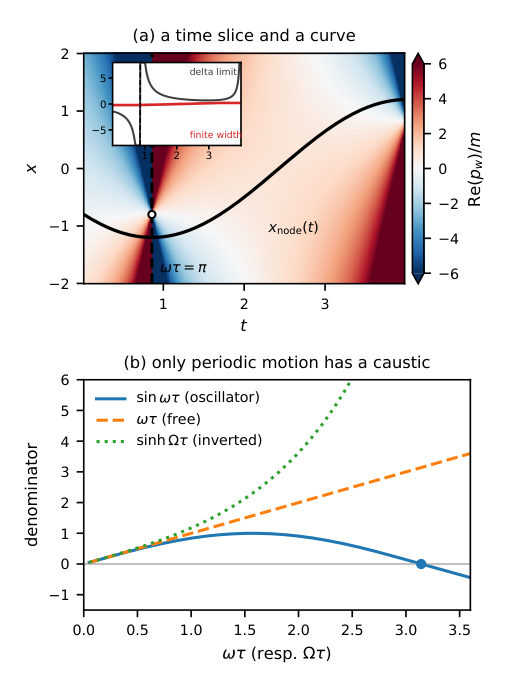
<figcaption class="paper-figure-caption"><b>Fig 1.</b> FIG. 1. Caustic versus node. (a) The delta-limit field (28) diverges along an entire time-slice ωτ = π (dashed), the same t for every x (with the single exception of x = −xf, where numerator and denominator vanish together, Proposition 8), whereas the osmotic boundary ∂D = {x = xnode(t)} (solid) is a curve. The two are geometrically distinct objects in the same plane. Inset, at fixed x. The delta-limit field blows up at the caustic while the finite-width (coherent) Re(pw) of (C5) passes through it smoothly, the overlap staying nonzero. (b) The caustic exists only for periodic motion, the constrained- velocity denominator is sin ωτ for the oscillator (vanishing at τ = nπ/ω, circles), but ωτ...</figcaption>
</figure>
<figure class="paper-figure-card">
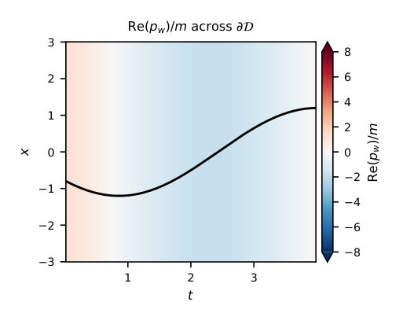
<figcaption class="paper-figure-caption"><b>Fig 2.</b> FIG. 3. Control. The current velocity Re(pw)/m for the same nodal post-selection stays finite across ∂D (black). For this state class it is in fact exactly independent of x at each t [Eq. (29)], so the panel is a visualization of an exact identity. The divergence visible in Fig. 2(b) is absent here at any reso- lution, which is what entitles one to call it osmotic.</figcaption>
</figure>
<figure class="paper-figure-card">
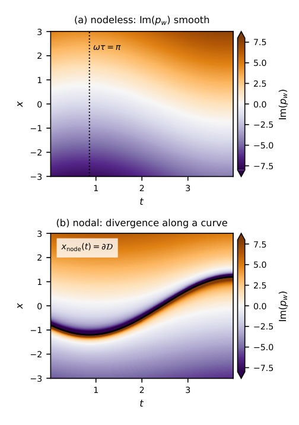
<figcaption class="paper-figure-caption"><b>Fig 3.</b> FIG. 2. Osmotic momentum Im(pw) for the oscillator (pa- rameters in text). (a) Nodeless post-selection, smooth. The Mehler caustic ωτ = π (dotted) is regularized and is not ∂D. (b) Nodal post-selection, Im(pw) diverging as 1/(x −xnode), sign-changing, along the curve xnode(t) (black), the genuine ∂D.</figcaption>
</figure>
<figure class="paper-figure-card">
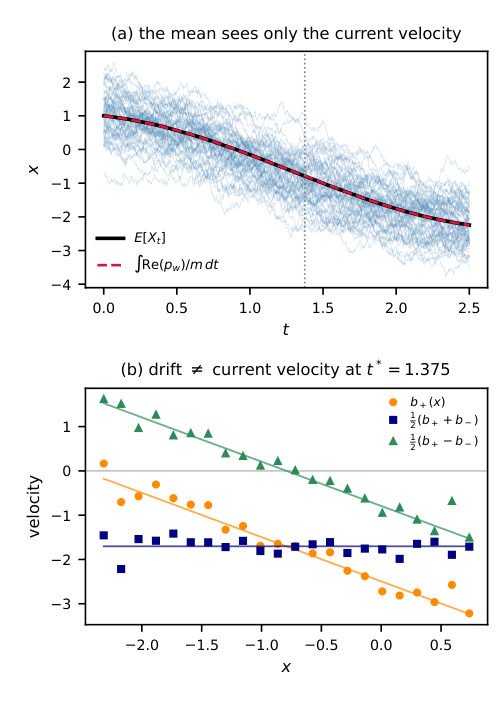
<figcaption class="paper-figure-caption"><b>Fig 4.</b> FIG. 4. Proposition 1 on sampled trajectories. Coherent (nodeless) pre-/post-selection on D, oscillator with ωT &lt; π (no caustic). The sampled process is the demonstration diffu- sion of the text, with drift b = ¯v + ν ∂x ln ¯ρ, ¯v(t) = Re(pw)/m [Eq. (C5)], and ¯ρ a fixed-width Gaussian (coherent width σ2 = ℏ/2mω) whose center is transported at ¯v. By Propo- sition 1 its marginal is not the product density ρψρϕ(·, t). (a) The ensemble mean E[Xt] (black) tracks the indepen- dently computed field R ¯v dt (dashed) along an oscillatory, not a straight, curve. (b) From the same paths at fixed t, the local Itô drift b+(x) (sloped) differs from the Nelson current velocity 1 2(b+ + b−) (flat, equal...</figcaption>
</figure>
<figure class="paper-figure-card">
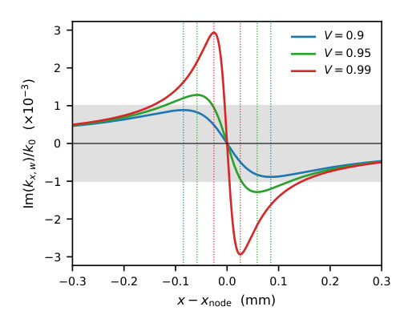
<figcaption class="paper-figure-caption"><b>Fig 5.</b> FIG. 5. Predicted osmotic (imaginary) transverse-momentum weak value Im(kx,w)/k0 across a dark fringe, i.e. Eq. (31), which gives Im(kx,w), of dimension inverse length, divided by k0 = 2π/λ, for the Kocsis geometry [2] at z = 5.6 m (Λ ≃1.13 mm) and three visibilities V . Dotted lines mark the extrema at x −xnode = ±ϵ. The grey band is the ±10−3 scale of the current-velocity signal Re(kx,w)/k0 already measured. The imaginary signal is of the same order and sharpens toward a true 1/(x −xnode) pole as V →1.</figcaption>
</figure>
</div>

<p><strong>Summary.</strong> This theoretical paper analyzes the weak momentum in quantum systems, showing that standard conditioned-diffusion models fail when the system's two-state amplitude develops nodes. The failure manifests as a divergence in the osmotic component of the weak momentum, which is a key diagnostic distinguishing the quantum reality from purely current-based classical descriptions.</p>
<p><strong>Why it may be interesting.</strong> It provides a rigorous mathematical constraint on how quantum weak measurements can be modeled using classical diffusion processes, highlighting where the underlying stochastic assumptions break down.</p>
<details>
<summary>Detailed structure</summary>
<p><strong>Main problem.</strong> The paper investigates the limitations of applying conditioned-diffusion representations, derived from quantum Schrödinger bridges, to the weak momentum, especially when the two-state amplitude exhibits nodes.</p>
<p><strong>Main result.</strong> The positivity hypothesis required by these bridges fails on a definite locus (the nodal curve), causing the osmotic part of the weak momentum to diverge while the current part remains bounded.</p>
<p><strong>Method.</strong> The analysis uses the Madelung decomposition of the weak momentum and compares its behavior to established quantum stochastic frameworks like Doob's $h$-transform.</p>
<p><strong>Model / system.</strong> The system involves pre- and post-selected quantum states ($\psi$ and $\phi$) and analyzes the weak momentum in the context of a two-slit geometry with separable transverse fields.</p>
<p><strong>Key observables.</strong> Weak momentum components (current and osmotic parts), nodal locus of $\phi^*\psi$, and fringe visibility/contrast.</p>
<p><strong>Important parameters / regimes.</strong> The order of the zero ($k$) of the two-state amplitude, and the small parameter $   heta$ in related context analyses.</p>
<p><strong>Assumptions / limitations.</strong> The results are derived for one-dimensional systems covering separable transverse fields, and the analysis distinguishes between the current velocity and the Itô drift.</p>
<p><strong>Figures summary.</strong> Not specified (Notes focus on mathematical derivations and conceptual failures rather than figure descriptions).</p>
<p><strong>Paper structure.</strong> The paper builds by first establishing the failure of the positivity hypothesis required by quantum Schrödinger bridges when dealing with the two-state amplitude. It then analyzes the divergence of the osmotic part at the node, contrasting this with the bounded current part, and finally relates these findings to experimental diagnostics like fringe visibility.</p>
</details>
<details>
<summary>Abstract</summary>
<p>Quantum Schrödinger bridge constructions establish the existence of a conditioned process under a positivity hypothesis on the endpoint data, and three independent ones adopt it. We show that hypothesis fails on a definite locus once the conditioned object is the two-state amplitude $φ^*ψ$ of a pre- and post-selected pair on configuration space, and that the failure is testable on recorded data. Whenever $φ^*ψ$ has a moving zero of order $k$ across which probability flows, no diffusion of constant diffusion coefficient can both carry the conditioned density and avoid the nodal curve: the current velocity it would need grows as the inverse $2k$-th power of the distance to that curve and points toward it on one side, placing the curve at finite scale distance, so it is reached and not merely approached. Identifying the weak momentum with a bridge drift fails independently: for a free particle post-selected in position the current velocity is exactly minus the drift of the bridge to the target. The positive Doob $h$-transform and the Bernstein conditioning built on it exist wherever $φ^*ψ$ is nodeless and fail on the nodal curve. There the osmotic part of the weak momentum diverges as the inverse distance to the zero and changes sign across it with a coefficient set by $k$, while the current part stays bounded; that boundedness rests on the signed factorization of the real-envelope class and hides the obstruction from any picture built on the current velocity alone. A measured fringe visibility fixes a single length, which puts a Lorentzian of order $10^{-3}$ into the current channel reconstructed in the two-slit trajectory experiment if the contrast is limited by an off-axis zero, and nothing there if by incoherence. The results are one-dimensional, covering the separable transverse field of a two-slit geometry, not general two-dimensional vortices.</p>
</details>
<p><sub><a href="#top">↑ back to top</a></sub></p>

<p><a id="paper-2609.03650"></a></p>
<h3 id="low-frequency-charge-noise-in-bilayer-graphene-quantum-dots"><a href="http://arxiv.org/abs/2609.03650v1">Low-Frequency Charge Noise in Bilayer Graphene Quantum Dots</a></h3>
<p><strong>Authors:</strong> Jessica Richter, Max J. Ruckriegel, Jonas D. Gerber, Tijl Degroote, Christoph Adam, Markus Niese, Lara Ostertag, Clara Galante, Kenji Watanabe, Takashi Taniguchi, Petar Tomic, Artem O. Denisov, Hadrien Duprez, Klaus Ensslin, Thomas Ihn<br>
<strong>Type:</strong> experiment · <strong>Category:</strong> quantum information and computing · <strong>PDF:</strong> <a href="https://arxiv.org/pdf/2609.03650v1">https://arxiv.org/pdf/2609.03650v1</a><br>
<strong>Analysis basis:</strong> full PDF text, analyzed in chunks
<strong>Topic relevance:</strong> 🔥 <code>QC/QI experiment</code> <strong>4/5</strong> · <code>quantum measurements</code> <strong>2/5</strong></p>
<div class="figure-strip-hint">↔ Scroll figures horizontally</div>
<div class="paper-figures-scroll">
<figure class="paper-figure-card">
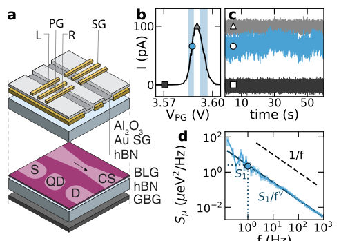
<figcaption class="paper-figure-caption"><b>Fig 1.</b> FIG. 1. Low-frequency charge-noise measurement. (a) Heterostructure that consists of BLG encapsulated in hBN, a graphite back gate (GBG), and two gold top-gate layers. Split gates (SGs) define two parallel transport chan- nels; six finger gates are operated as a plunger gate (PG) and left and right barrier gate (L, R) to define a quantum dot (QD) and a charge sensor (CS), operated with the sen- sor gate (SG). (b) Example of a CB resonance with three operation points, steepest point on flank (blue circle), top of the resonance (gray triangle) and background (black square). Blue-shaded regions mark the flanks. (c) Current fluctuation as a function of time. (d) PSD of the energy fluctuations...</figcaption>
</figure>
<figure class="paper-figure-card">
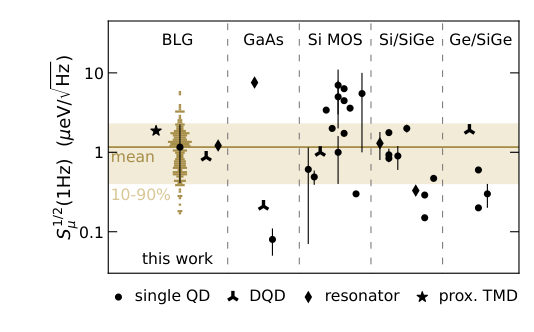
<figcaption class="paper-figure-caption"><b>Fig 2.</b> FIG. 2. Charge-noise amplitude S1/2 µ at 1 Hz of BLG compared to other established QD platforms. Our results for BLG single QDs are summarized in the vertical histogram around the median value (solid yellow line), with the 10-90 percentile range of this distribution highlighted in beige. Additional BLG points reflect varying dot geometries (DQD), readout mechanism (resonator) and heterostructure designs (proximitized TMD). Literature values (representa- tive, non-exhaustive) are shown for GaAs [23–25], Si MOS [26–35], Si/SiGe [20, 27, 36–40] and Ge/SiGe [21, 41, 42]. A full table of the references is provided in the Supplementary Material S2.</figcaption>
</figure>
<figure class="paper-figure-card">
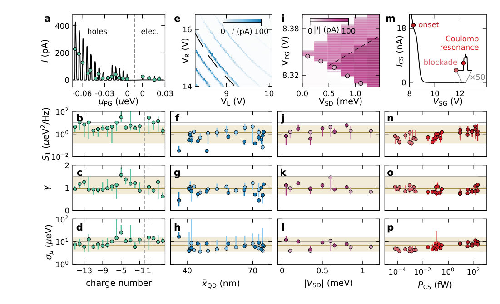
<figcaption class="paper-figure-caption"><b>Fig 3.</b> FIG. 3. Influence of electrostatic tuning on charge noise. The charge-noise amplitude S1 (second row), frequency exponent γ (third row) and integrated charge noise σµ (fourth row) are shown with respect to four independent tuning parameters. We included the median value, as well as the 10-90 percentile spread of the full measurement ensemble (comp. Sec. S3). For each charge noise metric, the circle indicates the result of the operation point (at the steepest slope) whereas the vertical bar denotes the range of lowest to highest value measured on the entire flank of the Coulomb resonance (see Supplementary Material S1). (a–d) Charge occupation. In (a) the analyzed Coulomb resonances and...</figcaption>
</figure>
<figure class="paper-figure-card">
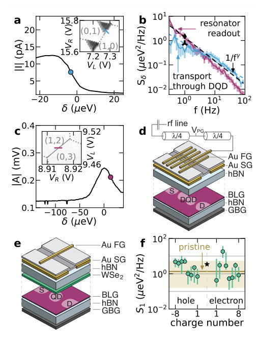
<figcaption class="paper-figure-caption"><b>Fig 4.</b> FIG. 4. Charge noise with respect to quantum dot ge- ometry, readout technique and heterostructure engi- neering. (a) Transport signal along the DQD interdot tran- sition (black); operation point at steepest slope (light blue circle, cf. Fig. 1). Inset: charge stability diagram (CSD) with bias triangles and measurement line (light blue); DQD occupation (N, M), with N (M) the electron number in the left (right) dot. (b) Detuning noise spectrum Sδ from trans- port (light blue) and resonator readout (pink), both fitted to S1/f γ (dashed, blue/pink line). Corresponding 1 Hz values refer to Fig. 2 (DQD, resonator). Dashed black S1/f line with median single-dot S1 is shown for comparison. (c)...</figcaption>
</figure>
<figure class="paper-figure-card">
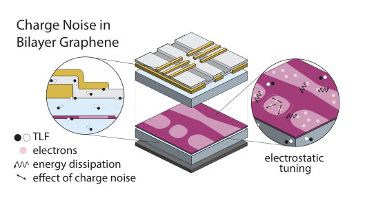
<figcaption class="paper-figure-caption"><b>Fig 5.</b> FIG. 5. For Table of Contents Only</figcaption>
</figure>
</div>

<p><strong>Summary.</strong> This experimental work characterizes the low-frequency charge noise in Bilayer Graphene Quantum Dots using noise spectroscopy. The measured noise levels are competitive with established semiconductor platforms, and the noise proves robust against systematic electrostatic tuning. These results strongly validate BLG as a promising material for developing coherent solid-state qubits.</p>
<p><strong>Why it may be interesting.</strong> The work directly addresses the primary decoherence mechanism (charge noise) limiting qubit coherence, providing quantitative metrics essential for assessing any solid-state platform for quantum computation.</p>
<details>
<summary>Detailed structure</summary>
<p><strong>Main problem.</strong> The study aimed to characterize and assess the low-frequency charge noise in Bilayer Graphene (BLG) Quantum Dots (QDs) to determine if the material is a viable platform for coherent quantum information processing.</p>
<p><strong>Main result.</strong> The measured charge noise amplitude ($1.16 \mu	ext{eV}/\sqrt{	ext{Hz}}$) places BLG within the range of established semiconductor platforms, and the noise levels showed no systematic dependence on varying electrostatic tuning parameters.</p>
<p><strong>Method.</strong> The noise was characterized using transport-based noise spectroscopy by observing current fluctuations at the flank of a Coulomb blockade resonance, with independent confirmation via superconducting resonator readout.</p>
<p><strong>Model / system.</strong> The physical system is gate-defined BLG QDs, sometimes extended to incorporate Transition Metal Dichalcogenide (TMD) layers, fabricated in a van-der-Waals heterostructure.</p>
<p><strong>Key observables.</strong> Median charge-noise amplitude ($S_{1/2\mu}(1 	ext{ Hz})$), Power Spectral Density (PSD) $S_\mu(f)$, and integrated charge noise ($\sigma_\mu$).</p>
<p><strong>Important parameters / regimes.</strong> Cryogenic temperature (20 mK), charge occupation, confinement potential, source-drain bias ($|V_{SD}|$), and sensor operating power.</p>
<p><strong>Assumptions / limitations.</strong> The noise is attributed to Two-Level Fluctuators (TLFs) in dielectrics or interfaces, and the lack of systematic dependence suggests the noise is intrinsic to the environment rather than the gate-tunable parameters.</p>
<p><strong>Figures summary.</strong> Figure 1 illustrates the device heterostructure and measurement procedure. Figure 2 compares the extracted charge noise amplitudes of BLG to other QD platforms. Figure 3 demonstrates the lack of systematic evolution of noise parameters when varying electrostatic tuning parameters.</p>
<p><strong>Paper structure.</strong> The paper systematically characterizes charge noise by varying multiple operational parameters (occupation, bias, confinement) using transport spectroscopy, confirms results with an independent readout method, and extends the study to hybrid TMD/BLG systems.</p>
</details>
<details>
<summary>Abstract</summary>
<p>Bilayer graphene (BLG) quantum dots (QDs) are a promising platform for semiconductor qubits. However, the low-frequency charge noise that may ultimately limit coherence has remained largely unexplored. Here, we systematically characterize charge noise in gate-defined BLG QDs using transport-based noise spectroscopy. We extract a median amplitude of $ S_μ^{1/2} (1~\text{Hz}) = 1.16~μ\text{eV}/\sqrt{\text{Hz}}$, placing BLG well within the range reported for established semiconductor quantum-dot platforms. Across variations in charge occupation, confinement, source-drain bias, and charge-sensor operating conditions, neither the noise amplitude nor the spectral dependence shows a reproducible trend in electrostatic tuning, indicating that we extracted the intrinsic semiconductor noise. Consistent noise levels are further observed in double QDs and confirmed using an independent superconducting resonator-based dispersive readout. Extending the study to BLG devices incorporating transition metal dichalcogenide layers reveals no measurable charge noise increase in weakly proximitized QDs. These results validate BLG as a viable platform for coherent quantum information processing.</p>
</details>
<p><sub><a href="#top">↑ back to top</a></sub></p>

<p><a id="paper-2609.04132"></a></p>
<h3 id="characterizing-large-scale-quantum-systems-with-error-per-circuit-layer"><a href="http://arxiv.org/abs/2609.04132v1">Characterizing Large Scale Quantum Systems with Error Per Circuit Layer</a></h3>
<p><strong>Authors:</strong> Travis Hurant, Arian Vezvaee, Swarnadeep Majumder, Aniket Dalvi, Jude Alnas, Kenneth R. Brown<br>
<strong>Type:</strong> both · <strong>Category:</strong> quantum information and computing · <strong>PDF:</strong> <a href="https://arxiv.org/pdf/2609.04132v1">https://arxiv.org/pdf/2609.04132v1</a><br>
<strong>Analysis basis:</strong> full PDF text, analyzed in chunks
<strong>Topic relevance:</strong> 🔥 <code>QC/QI experiment</code> <strong>4/5</strong> · <code>quantum measurements</code> <strong>1/5</strong></p>
<div class="figure-strip-hint">↔ Scroll figures horizontally</div>
<div class="paper-figures-scroll">
<figure class="paper-figure-card">
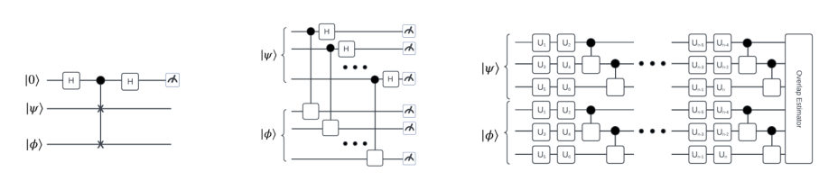
<figcaption class="paper-figure-caption"><b>Fig 1.</b> Fig. 1: Overlap measurement and random circuit construction used in EPCL. (a) The swap test estimates the overlap Tr(ρAρB) using an ancilla and a controlled-SWAP operation between the two registers. (b) The pairwise Bell-basis measurement replaces the controlled-SWAP with local Bell-basis measurements between corresponding qubits; classical post-processing of the measurement outcomes recovers the state overlap. (c) EPCL applies the same random circuit instance to two disjoint n- qubit registers and estimates the overlap between their noisy output states. The illustrative circuit uses T = 2 for compactness; the numerical and experimental studies in this work use T = 4. Independently sampled...</figcaption>
</figure>
<figure class="paper-figure-card">
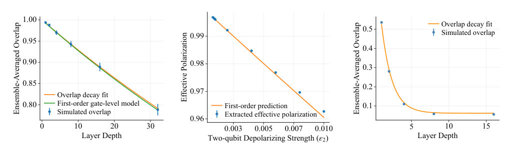
<figcaption class="paper-figure-caption"><b>Fig 2.</b> Fig. 2: EPCL under local depolarizing noise, demonstrating agreement with the first-order baseline model in the weak-noise regime and stable decay behavior beyond the validity of that approximation. (a) For ε1 = 10−4 and ε2 = 10−3, the EPCL fit closely agrees with the simulated overlap decay and yields bpeff = 0.99601, compared with the first-order prediction pFO eff = 0.99599. (b) Sweeping the two-qubit depolarizing strength while maintaining ε1 = 0.1ε2 produces close agreement at low noise strengths, with systematic deviation emerging near ε2 ≈6 × 10−3 as higher-order Pauli fault contributions become significant and the first-order approximation breaks down. (c) At the intentionally large...</figcaption>
</figure>
<figure class="paper-figure-card">
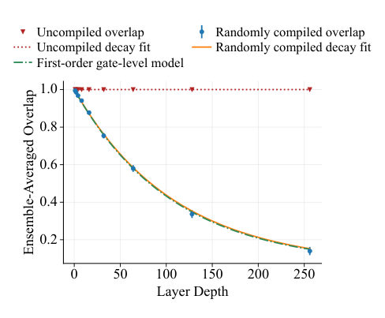
<figcaption class="paper-figure-caption"><b>Fig 3.</b> Fig. 3: Effect of Pauli twirling on EPCL sensitivity to a fixed coherent error in the entangling layer. A coherent over-rotation of θ = π/40 is applied to the target qubit of each CX gate. Without Pauli twirling, the overlap exhibits essentially no depth-dependent decay, indicating that the unmodified EPCL protocol is insensitive to this coherent error structure. With Pauli twirling, the coherent error is randomized into an effective stochastic channel, restoring the exponential decay used by EPCL to estimate effective polarization. The extracted polarization, bpeff = 0.9955, closely agrees with the first-order prediction pFO eff = 0.9954.</figcaption>
</figure>
<figure class="paper-figure-card">
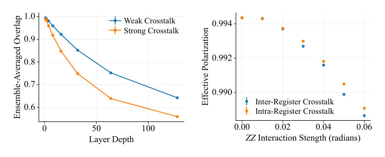
<figcaption class="paper-figure-caption"><b>Fig 4.</b> Fig. 4: Effect of coherent ZZ crosstalk on EPCL. (a) Ensemble-averaged overlap as a function of circuit depth for inter-register crosstalk at representative weak (θ = 0.01) and strong (θ = 0.06) interaction strengths. In both cases, the overlap retains a clear exponential depth dependence, allowing an effective polarization to be extracted despite correlations between the two registers. (b) Extracted effective polarization as a function of ZZ interaction strength for intra- and inter-register crosstalk. Inter-register coupling produces a systematically lower effective polarization and stronger dependence on interaction strength than intra-register coupling, consistent with contributions...</figcaption>
</figure>
<figure class="paper-figure-card">
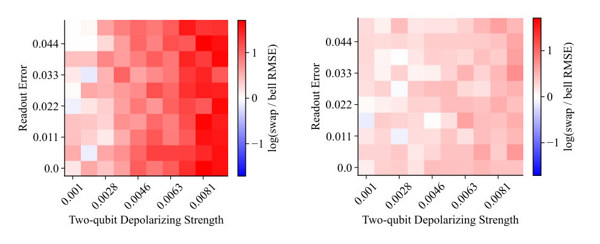
<figcaption class="paper-figure-caption"><b>Fig 5.</b> Fig. 5: Comparison of the two overlap measurement implementations considered for EPCL under depolarizing gate noise and readout error. The simulations use physical systems of 5 and 11 qubits, corresponding to N = 4 and N = 10 benchmark qubits, respectively. The swap-test implementation uses the remaining qubit as an ancilla, while the Bell-basis implementation does not require the additional qubit. Each point shows log(RMSEswap/RMSEBell) for the extracted effective polarization relative to a high-shot ideal reference computed using an error-free measurement circuit; positive values indicate lower estimation error for the Bell-basis implementation. (a) For N = 4, the Bell-basis measurement...</figcaption>
</figure>
</div>

<p><strong>Summary.</strong> This paper introduces Error Per Circuit Layer (EPCL), a novel overlap-based benchmark for characterizing noise in large quantum systems. EPCL measures the overlap between two independently evolved quantum registers, circumventing the need for computationally expensive classical simulations of ideal states. The method is validated on quantum hardware, providing a scalable metric for assessing aggregate register performance.</p>
<p><strong>Why it may be interesting.</strong> This work provides a crucial, hardware-agnostic diagnostic tool for assessing noise in large quantum circuits, which is vital for developing fault-tolerant quantum computation protocols.</p>
<details>
<summary>Detailed structure</summary>
<p><strong>Main problem.</strong> Developing a robust, scalable circuit-level benchmark to characterize noise accumulation in large quantum systems without relying on classical simulation of ideal outputs.</p>
<p><strong>Main result.</strong> The proposed Error Per Circuit Layer (EPCL) benchmark successfully measures aggregate register performance via output state overlap, showing clear decay on IBM hardware and remaining compatible with arbitrary gate sets.</p>
<p><strong>Method.</strong> EPCL estimates effective layer polarization by measuring the overlap between the output states of two disjoint quantum registers after applying identical random circuits.</p>
<p><strong>Model / system.</strong> The study analyzes quantum processors, using two copies of an $n$-qubit register to measure the overlap $   ext{Tr}(
ho_A 
ho_B)$ as a function of circuit depth. The analysis is grounded in depolarizing channel models.</p>
<p><strong>Key observables.</strong> Overlap between output states ($   ext{Tr}(
ho_A 
ho_B)$), effective layer polarization ($p_{ ext{eff}}$), and the decay rate of this overlap with circuit depth.</p>
<p><strong>Important parameters / regimes.</strong> Circuit depth ($d$), number of qubits ($n$), and the effective layer polarization parameter ($p$).</p>
<p><strong>Assumptions / limitations.</strong> The method assumes an ensemble-averaged depolarizing model for deriving the expected overlap decay, and it is designed to overcome the classical simulation bottleneck of prior methods.</p>
<p><strong>Figures summary.</strong> Figures illustrate the overlap measurement using techniques like the Swap Test or Pairwise Bell Measurements, and show the resulting decay curve as a function of circuit depth.</p>
<p><strong>Paper structure.</strong> The paper introduces EPCL as an overlap-based primitive, compares it to existing benchmarks (like XEB and EPLG), derives the expected decay under a depolarizing model, and validates the method through numerical simulations and experiments on quantum hardware.</p>
</details>
<details>
<summary>Abstract</summary>
<p>Quantum benchmarks provide compact measures of performance that are important for evaluating and comparing quantum systems. Circuit-level benchmarks are particularly valuable because they capture the accumulated effects of noise across interacting operations, but existing approaches may require structured gate sets and costly compilation, classical simulation of reference outputs, or subsystem decompositions that do not capture full-register behavior. We introduce Error Per Circuit Layer (EPCL), an overlap-based circuit-level benchmark that estimates an effective layer polarization by applying identical random circuits to two disjoint quantum registers and measuring the overlap between their output states as a function of circuit depth. EPCL avoids classical simulation of ideal output distributions and recovery to a known reference state, and is compatible with arbitrary gate sets, including non-Clifford gates.   We derive the expected overlap decay under an ensemble-averaged depolarizing model and identify the assumptions under which the fitted decay parameter represents an effective layer polarization. Numerical simulations show that EPCL recovers the predicted polarization under weak local stochastic noise and remains well described by a single-exponential decay at stronger stochastic noise levels. The simulations further show that coherent errors associated with fixed entangling layers may require Pauli twirling or randomized compiling to produce the expected decay, while inter-register correlations contribute an additional covariance term to the measured overlap. Finally, experiments on IBM quantum hardware demonstrate clear EPCL decay in 8- and 16-qubit implementations. These results support EPCL as a method for measuring aggregate register performance without requiring classical simulation of ideal circuit outputs or restriction to structured gate sets.</p>
</details>
<p><sub><a href="#top">↑ back to top</a></sub></p>

<p><a id="paper-2609.03194"></a></p>
<h3 id="experimental-validation-of-a-compact-fault-tolerant-architecture-for-trapped-ions"><a href="http://arxiv.org/abs/2609.03194v1">Experimental validation of a compact fault-tolerant architecture for trapped ions</a></h3>
<p><strong>Authors:</strong> Noah Berthusen, Ali Lavasani, Asmae Benhemou, M. S. Allman, Joan Dreiling, Brian Estey, Cameron Foltz, Trent Jacobs, Michael Mills, Annie Jihyun Park, Adam P. Reed, David Hayes, Tzvetan S. Metodi, Andrew C. Potter<br>
<strong>Type:</strong> experiment · <strong>Category:</strong> quantum information and computing · <strong>PDF:</strong> <a href="https://arxiv.org/pdf/2609.03194v1">https://arxiv.org/pdf/2609.03194v1</a><br>
<strong>Analysis basis:</strong> full PDF text, analyzed in chunks
<strong>Topic relevance:</strong> 🔥 <code>QC/QI experiment</code> <strong>4/5</strong> · <code>quantum measurements</code> <strong>1/5</strong></p>
<div class="figure-strip-hint">↔ Scroll figures horizontally</div>
<div class="paper-figures-scroll">
<figure class="paper-figure-card">
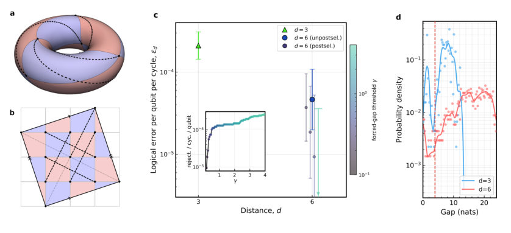
<figcaption class="paper-figure-caption"><b>Fig 1.</b> FIG. 1. C4-Helix code memory and distance scaling. a. Schematic of the [[10, 2, 3]] and [[20, 2, 6]] C4-Helix codes having been mapped onto a torus. The underlying lattice corresponds to the plaquettes of the [[10, 2, 3]] twisted Toric code. Dashed lines represent the pairing taken when performing the C4 concatenation for the C4-Helix code. b. Same schematic of the Helix code sequence, but on a flattened torus. c. Logical error rate per LQ, per cycle εd as a function of the code distance. We report results for the [[10, 2, 3]], and [[20, 2, 6]] C4-Helixcode with/out forced-gap postselection. All uncertainties reported through this work denote 95% Wilson confidence intervals unless otherwise...</figcaption>
</figure>
<figure class="paper-figure-card">
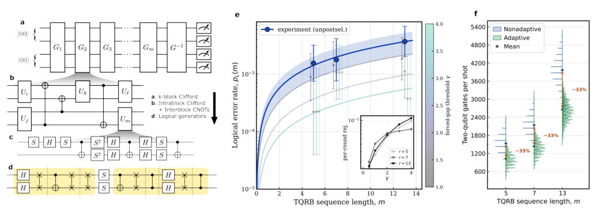
<figcaption class="paper-figure-caption"><b>Fig 2.</b> FIG. 2. Logical randomized Clifford benchmarking. a. A RB experiment on four qubits, where Gi ∈C4 and G1G2...GmG−1 = I. b. Each four-qubit Clifford is broken up into two-qubit Cliffords, U ∈C2, on each C4-Helix codeblock and interblock CNOT gates. c. A two-qubit Clifford is decomposed into single-qubit and CNOT gates. d. The decomposed two-qubit Clifford is expressed in the logical gateset of the C4-Helix code: {H0H1SWAP 0,1, CNOT 0,1SWAP 0,1, SWAP 0,1, CZ0,1, S0S1}. e. Logical circuit error rate pL(m) as a function of TQRB sequence length. Logical error rates can again be reduced via forced-gap postselection for a fixed per-round rejection rate (see inset). f. Distribution of physical...</figcaption>
</figure>
<figure class="paper-figure-card">
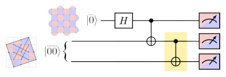
<figcaption class="paper-figure-caption"><b>Fig 3.</b> FIG. 3. Inter-code GHZ experiment schematic and results. For each experiment we report ¯z = Tr  P − Z ρ  and ¯x = Tr  P − X ρ  , the fraction of shots violating the Z-basis agreement and X-basis parity conditions, respectively. The physical baseline comprises 32 three-qubit GHZ states pre- pared in parallel and sampled over N = 32,000 groups per basis; the logical experiment uses the three-qubit logical GHZ state sampled over N = 4,000 shots per basis. Uncertainties are 95% Clopper–Pearson intervals.</figcaption>
</figure>
<figure class="paper-figure-card">
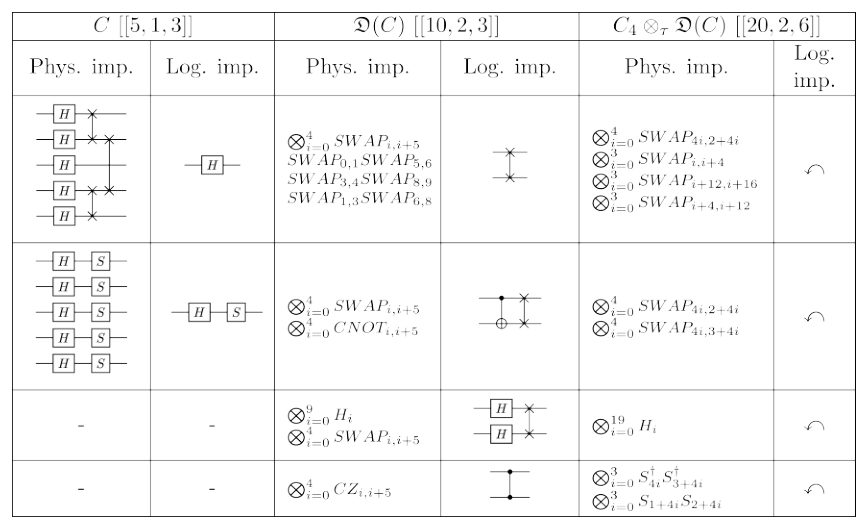
<figcaption class="paper-figure-caption"><b>Fig 4.</b> FIG. 4. Logical gates for the C4-Helix code sequence. SWAP-transversal gates on the non-CSS [[5, 1, 3]] code lifting to SWAP- and fold-transversal logical gates on the [[10, 2, 3]] symplectic double code, lifting again to SWAP-transversal gates on the [[20, 2, 6]] CSD code.</figcaption>
</figure>
<figure class="paper-figure-card">
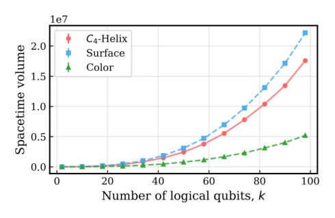
<figcaption class="paper-figure-caption"><b>Fig 5.</b> FIG. 7. Spacetime volume versus problem size. Space- time volume (mean compiled logical depth times number of physical qubits required to encode k logical qubits) of uni- formly random k-qubit Clifford operators, comparing the C4- Helix gateset, the surface code, and the color code. Each op- erator is sampled uniformly at random and synthesized into a minimal physical-gate circuit, whose layers are then costed by the native operations of each architecture. Note that syn- drome extraction overhead is not considered in this analysis.</figcaption>
</figure>
</div>

<p><strong>Summary.</strong> This paper experimentally validates a compact, fault-tolerant quantum computing architecture using the C4-Helix code on a trapped-ion quantum processor. The authors successfully demonstrated error suppression for memory, executed Clifford group operations with low logical error rates, and established a high-fidelity interface between two different quantum codes. These results confirm the architecture's viability for early-stage fault-tolerant quantum computation.</p>
<p><strong>Why it may be interesting.</strong> For a theoretical physicist, this provides concrete, hardware-validated benchmarks for resource estimation in fault-tolerant quantum computation, particularly regarding the overhead associated with implementing logical gates and state preparation.</p>
<details>
<summary>Detailed structure</summary>
<p><strong>Main problem.</strong> The challenge is to build a useful fault-tolerant quantum computation architecture that efficiently manages logical encoding, low-overhead logical operations, and access to non-Clifford resources.</p>
<p><strong>Main result.</strong> The authors experimentally validated the C4-Helix code on a trapped-ion processor, demonstrating protected memory, low-overhead Clifford group operations, and a high-fidelity interface between two different quantum error-correcting codes.</p>
<p><strong>Method.</strong> The work employs repeated Quantum Error Correction (QEC) cycles, randomized benchmarking (TQRB) for Clifford group testing, and benchmarking a heterogeneous interface to prepare entangled states between different codes.</p>
<p><strong>Model / system.</strong> The physical platform is a trapped-ion quantum processor (Quantinuum Helios, 98-qubit). The primary theoretical tool is the C4-Helix code, which is tested for its ability to support fault-tolerant computation primitives.</p>
<p><strong>Key observables.</strong> Logical error rates ($\epsilon_d$, $\epsilon_C$), GHZ state fidelity, and the efficiency of error suppression compared to physical measurements.</p>
<p><strong>Important parameters / regimes.</strong> The target regime is the early fault-tolerant regime, aiming for logical error rates in the $10^{-6}$ to $10^{-8}$ range.</p>
<p><strong>Assumptions / limitations.</strong> The analysis relies on the assumption that the architecture can be validated by demonstrating protected memory, low-overhead Clifford control, and the ability to interface with other codes.</p>
<p><strong>Figures summary.</strong> Figures illustrate the logical error rate scaling with code distance, the comparison of logical vs. physical randomized Clifford benchmarking, and the fidelity measurement for the three-logical-qubit GHZ state.</p>
<p><strong>Paper structure.</strong> The paper progresses by first establishing protected memory using the C4-Helix code, then benchmarking the full Clifford group operations within the codeblock, and finally demonstrating the capability to perform fault-tolerant entanglement generation between the C4-Helix code and a surface code.</p>
</details>
<details>
<summary>Abstract</summary>
<p>Quantum error correction (QEC) is beginning to enable logical operations that outperform their unencoded physical counterparts, but useful fault-tolerant computation will require more than low-error quantum memory. An effective architecture must orchestrate efficient logical encoding, low-overhead logical operations, and access to the non-Clifford resources required for universal computation. Here, we introduce and experimentally validate such an architecture based on the $[[20,2,6]]$ $C_4$-Helix code, designed for the early fault-tolerant regime. Using Quantinuum Helios, a 98-qubit trapped-ion quantum processor, we experimentally demonstrate the principal components of this architecture: we perform repeated quantum error correction with an error of $4.6^{+6.2}_{-2.6}\times10^{-5}$ per logical qubit per QEC cycle. We benchmark the complete Clifford group on the two logical qubits of a single codeblock under active error correction, obtaining an error of $2.8^{+1.0}_{-1.6}\times 10^{-4}$ per two-qubit logical Clifford. We further demonstrate a fault-tolerant chain-map interface between $C_4$-Helix and a distance-5 surface code, preparing a heterogeneous three-logical-qubit GHZ state with a fidelity lower bound of $99.925^{+0.068}_{-0.245}\%$. In each case, the encoded implementation outperforms its corresponding unencoded physical baseline without relying on postselection. Circuit-level simulations indicate that improvements in physical fidelity bring the same architecture into the $10^{-6}$-$10^{-8}$ logical-error regime targeted for early fault-tolerant computation. Together, these results establish $C_4$-Helix as a hardware-validated fault-tolerant architecture rather than a bare quantum memory.</p>
</details>
<p><sub><a href="#top">↑ back to top</a></sub></p>

<p><a id="paper-2609.03409"></a></p>
<h3 id="an-interpretation-independent-formulation-of-the-measurement-problem"><a href="http://arxiv.org/abs/2609.03409v1">An interpretation-independent formulation of the measurement problem</a></h3>
<p><strong>Authors:</strong> Antoine Soulas<br>
<strong>Type:</strong> theory · <strong>Category:</strong> other · <strong>PDF:</strong> <a href="https://arxiv.org/pdf/2609.03409v1">https://arxiv.org/pdf/2609.03409v1</a><br>
<strong>Analysis basis:</strong> full PDF text, analyzed in chunks
<strong>Topic relevance:</strong> 🔥 <code>quantum measurements</code> <strong>4/5</strong></p>
<div class="figure-strip-hint">↔ Scroll figures horizontally</div>
<div class="paper-figures-scroll">
<figure class="paper-figure-card">
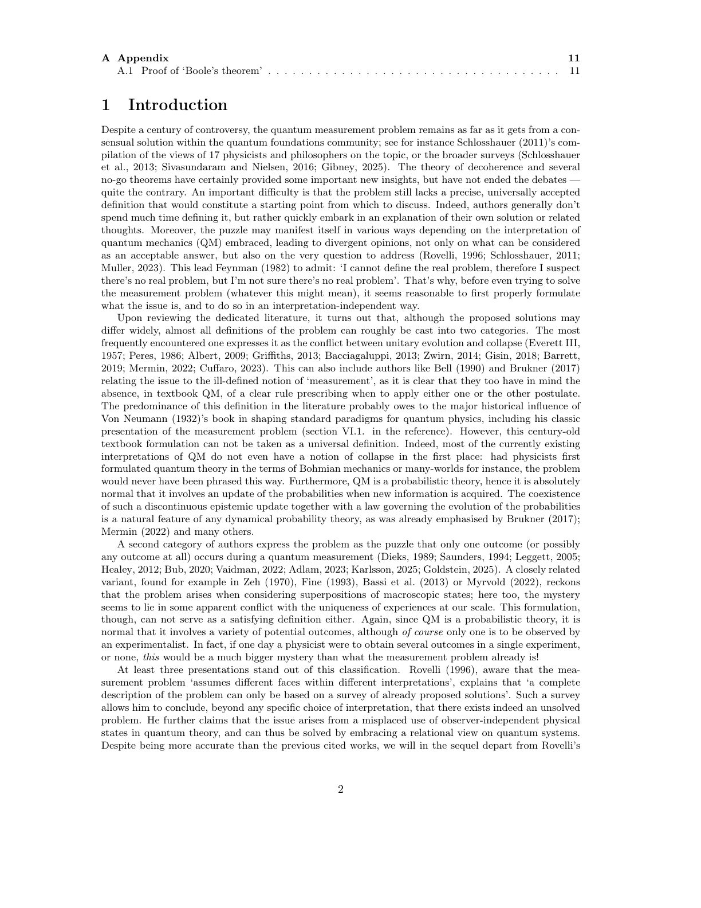
<figcaption class="paper-figure-caption"><b>Fig 1.</b> Low-resolution page preview, page 2</figcaption>
</figure>
<figure class="paper-figure-card">
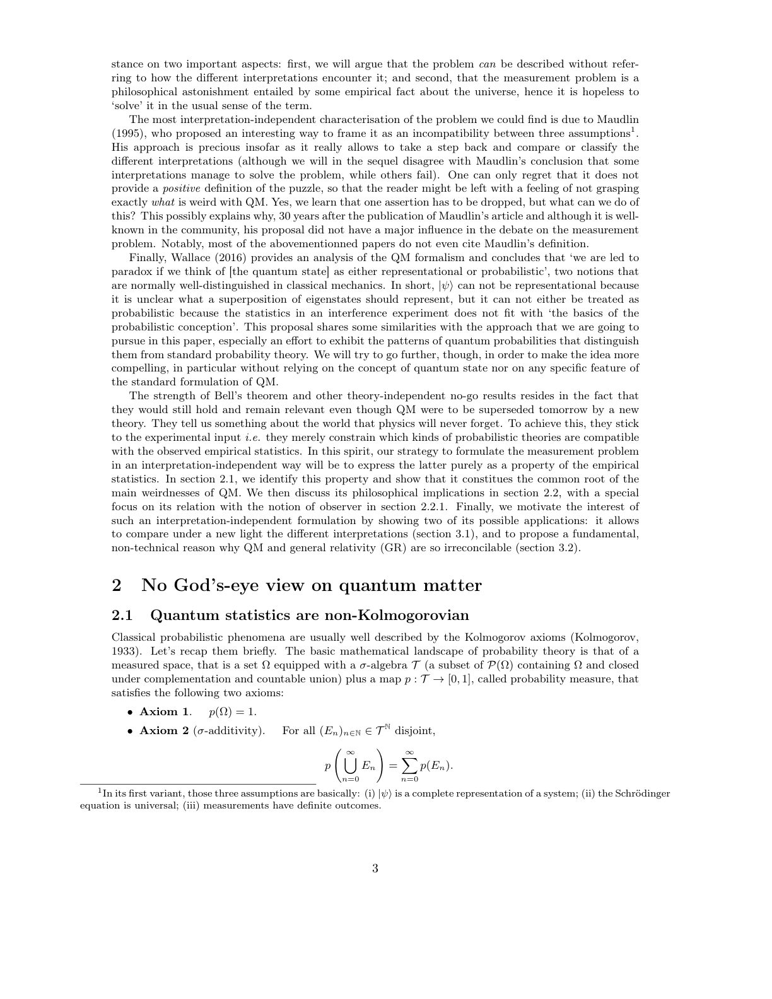
<figcaption class="paper-figure-caption"><b>Fig 2.</b> Low-resolution page preview, page 3</figcaption>
</figure>
<figure class="paper-figure-card">
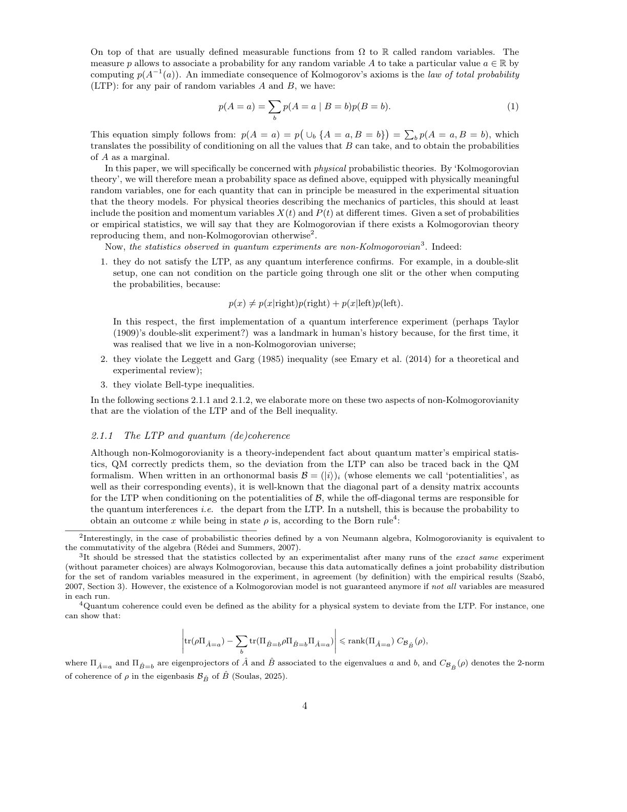
<figcaption class="paper-figure-caption"><b>Fig 3.</b> Low-resolution page preview, page 4</figcaption>
</figure>
<figure class="paper-figure-card">
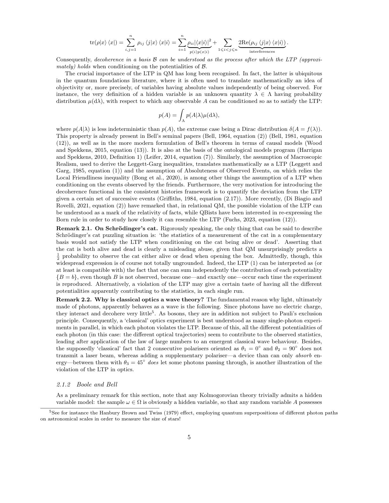
<figcaption class="paper-figure-caption"><b>Fig 4.</b> Low-resolution page preview, page 5</figcaption>
</figure>
<figure class="paper-figure-card">
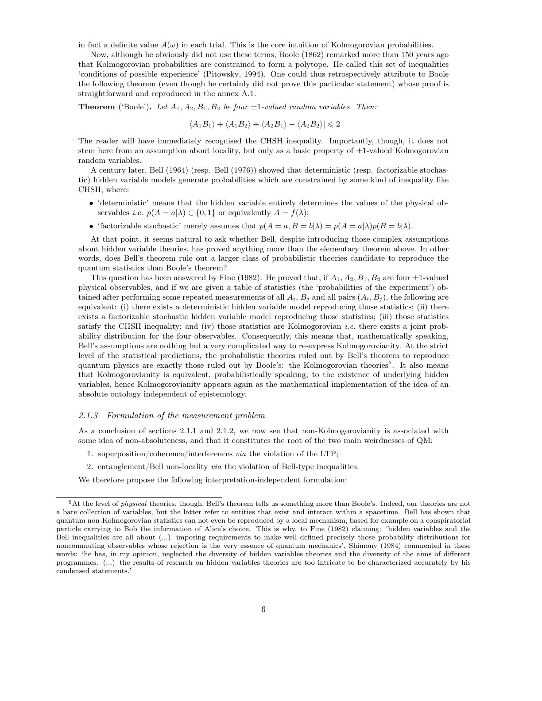
<figcaption class="paper-figure-caption"><b>Fig 5.</b> Low-resolution page preview, page 6</figcaption>
</figure>
</div>

<p><strong>Summary.</strong> This paper reframes the measurement problem not as a physical puzzle to be solved, but as a fundamental statistical inconsistency: quantum mechanics violates the axioms of classical probability theory. By establishing this non-Kolmogorovian nature of quantum statistics, the authors propose a framework that has profound implications for quantum gravity and the nature of objective reality.</p>
<p><strong>Why it may be interesting.</strong> It provides a fundamental, statistical framework for understanding the measurement problem that transcends specific interpretations, which is crucial for developing a unified theory of quantum gravity.</p>
<details>
<summary>Detailed structure</summary>
<p><strong>Main problem.</strong> The paper addresses the quantum measurement problem by seeking an interpretation-independent formulation, rather than attempting a direct solution.</p>
<p><strong>Main result.</strong> The core finding is that quantum matter cannot be described by a Kolmogorovian probabilistic theory, suggesting the problem lies in the incompatibility between quantum statistics and classical probability axioms.</p>
<p><strong>Method.</strong> The methodology involves analyzing the empirical statistics of quantum measurements, comparing them against the axioms of classical probability (Kolmogorov theory), and drawing parallels with theory-independent theorems like Bell's theorem.</p>
<p><strong>Model / system.</strong> The focus is on the abstract mathematical properties of quantum mechanical predictions and their empirical statistics, rather than a specific physical Hamiltonian or system.</p>
<p><strong>Key observables.</strong> Violation of the Law of Total Probability (LTP), violation of Bell-type inequalities, and the non-Kolmogorovian nature of quantum interference statistics.</p>
<p><strong>Important parameters / regimes.</strong> None specified; the focus is on fundamental axioms and statistical properties.</p>
<p><strong>Assumptions / limitations.</strong> The authors assume that the conflict arises because the standard axioms of probability (Kolmogorov) are insufficient to describe quantum reality, leading to the conclusion that no 'God's-eye view' exists.</p>
<p><strong>Paper structure.</strong> The paper moves from reviewing the limitations of existing interpretations to establishing the non-Kolmogorovian nature of quantum statistics through statistical diagnostics, and finally discussing the philosophical implications for quantum gravity and the nature of reality.</p>
</details>
<details>
<summary>Abstract</summary>
<p>In this paper, we do not try to solve the measurement problem, but rather to properly formulate it. One of the reasons why it still lacks a precise, agreed definition is that the problem may take very different aspects depending on the interpretation of quantum mechanics embraced. Inspired by the methodology of theory-independent results like Bell's theorem, we propose to identify the common root of the puzzle in an interpretation-independent way i.e. as a property of the empirical statistics only, before deriving its philosophical consequences. The key observation is that quantum matter can not be described by a Kolmogorovian probabilistic theory. Arguing that the Kolmogorov axioms of probability theory are the postulates of epistemic uncertainty leads us to reformulate the measurement problem as the impossibility to build an ontology independent of epistemology for quantum matter. Said differently, there exists no God's-eye view on quantum systems. Although it is meaningless to solve the measurement problem as defined in this way, insofar as it is a feature of the universe's statistics, such a formulation may on the other hand bring side benefits. In particular, we argue that it allows to: (i) shed a new light on the variety of interpretations; (ii) propose a fundamental reason why quantum mechanics and general relativity are so incompatible, not relying on purely mathematical or technical arguments; (iii) guide the quest for quantum gravity.</p>
</details>
<p><sub><a href="#top">↑ back to top</a></sub></p>

<p><a id="paper-2609.04178"></a></p>
<h3 id="measurements-on-the-separated-subsystems-of-an-entangled-state"><a href="http://arxiv.org/abs/2609.04178v1">Measurements on the separated subsystems of an entangled state</a></h3>
<p><strong>Authors:</strong> Gregory D. Scholes<br>
<strong>Type:</strong> theory · <strong>Category:</strong> other · <strong>PDF:</strong> <a href="https://arxiv.org/pdf/2609.04178v1">https://arxiv.org/pdf/2609.04178v1</a><br>
<strong>Analysis basis:</strong> full PDF text, analyzed in chunks
<strong>Topic relevance:</strong> 🔥 <code>quantum measurements</code> <strong>4/5</strong></p>
<div class="figure-strip-hint">↔ Scroll figures horizontally</div>
<div class="paper-figures-scroll">
<figure class="paper-figure-card">
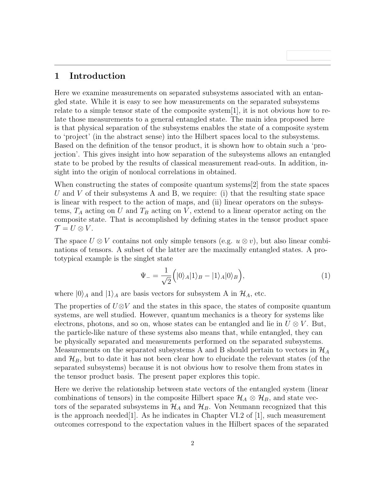
<figcaption class="paper-figure-caption"><b>Fig 1.</b> Low-resolution page preview, page 2</figcaption>
</figure>
<figure class="paper-figure-card">
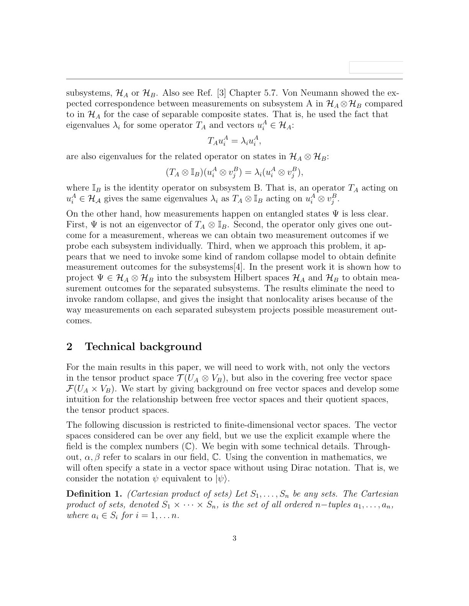
<figcaption class="paper-figure-caption"><b>Fig 2.</b> Low-resolution page preview, page 3</figcaption>
</figure>
<figure class="paper-figure-card">
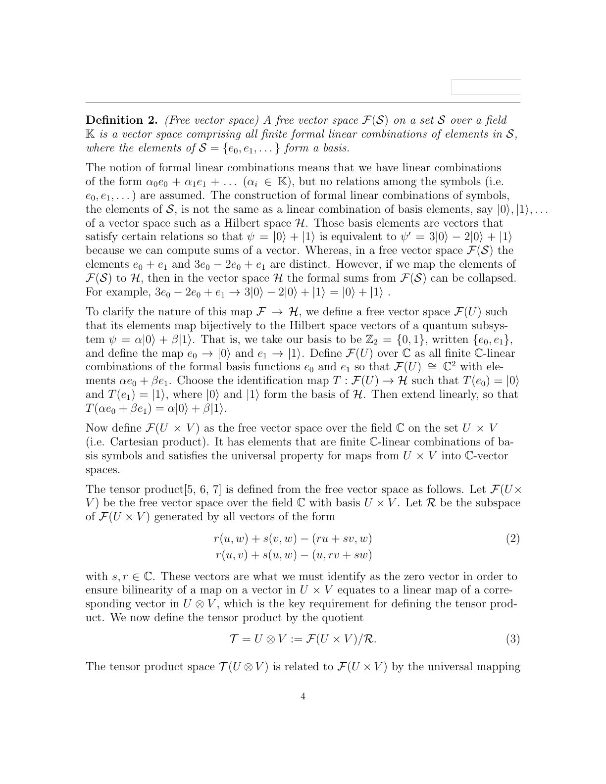
<figcaption class="paper-figure-caption"><b>Fig 3.</b> Low-resolution page preview, page 4</figcaption>
</figure>
<figure class="paper-figure-card">
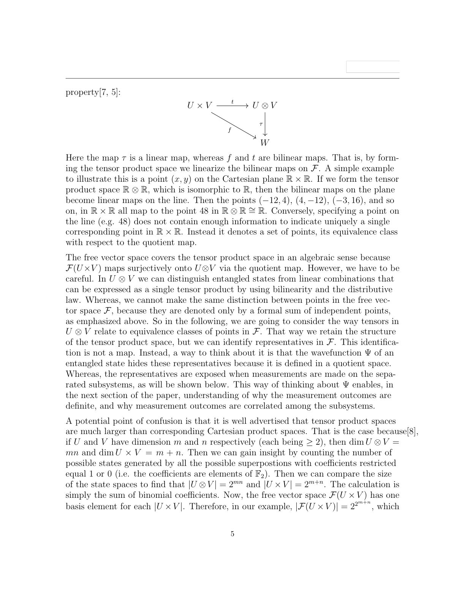
<figcaption class="paper-figure-caption"><b>Fig 4.</b> Low-resolution page preview, page 5</figcaption>
</figure>
<figure class="paper-figure-card">
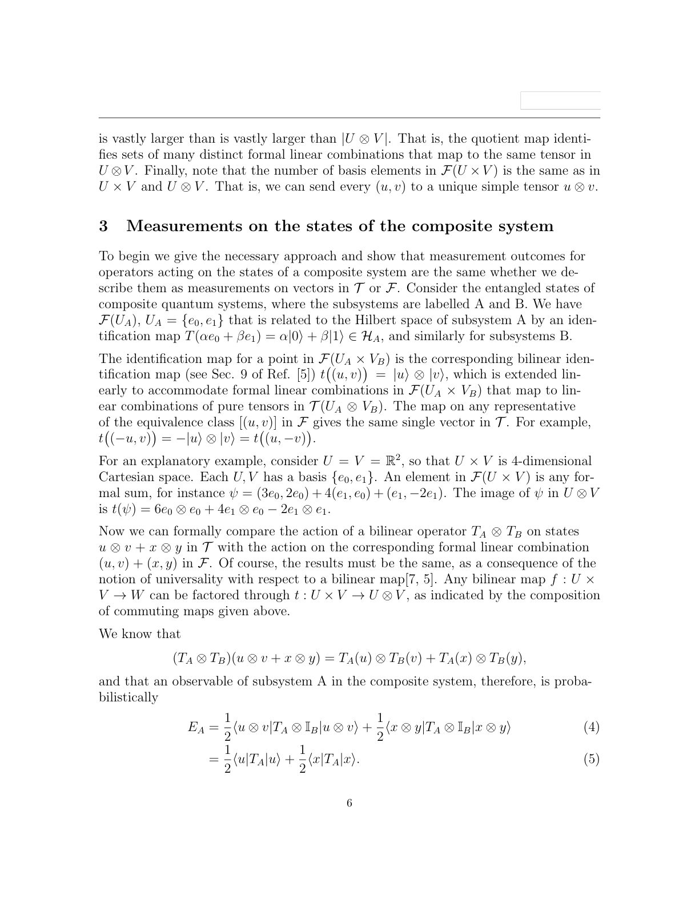
<figcaption class="paper-figure-caption"><b>Fig 5.</b> Low-resolution page preview, page 6</figcaption>
</figure>
</div>

<p><strong>Summary.</strong> This theoretical paper tackles the mathematical challenge of describing measurements on separated parts of an entangled quantum system. It introduces a novel framework using free vector spaces to calculate these local measurement projections, successfully bypassing the need to invoke a random collapse model. The key finding is that quantum nonlocality emerges naturally from the way local measurements project the state's possible outcomes.</p>
<p><strong>Why it may be interesting.</strong> This work provides a deep mathematical underpinning for quantum nonlocality by reformulating measurement theory away from collapse postulates, which is fundamental to understanding open quantum systems dynamics.</p>
<details>
<summary>Detailed structure</summary>
<p><strong>Main problem.</strong> The paper addresses the mathematical difficulty of describing measurement outcomes on physically separated subsystems of an entangled state when the state is represented in a tensor product Hilbert space.</p>
<p><strong>Main result.</strong> It proposes a framework using the free vector space to calculate measurement projections, showing that nonlocality arises from the way these local measurements project the possible outcomes, eliminating the need for a random collapse postulate.</p>
<p><strong>Method.</strong> The authors develop a mathematical formalism comparing the tensor product space to the free vector space, defining a canonical projection to relate global entangled states to local measurement outcomes.</p>
<p><strong>Model / system.</strong> The system involves bipartite entangled quantum states ($\mathcal{H}_A \otimes \mathcal{H}_B$) that can be physically separated for measurement. The mathematical model contrasts the tensor product structure with the free vector space structure to handle measurement projections.</p>
<p><strong>Key observables.</strong> Measurement outcomes on separated subsystems A and B, and the correlation between these paired outcomes.</p>
<p><strong>Important parameters / regimes.</strong> The entanglement structure of the state, and the choice of measurement basis (contextual phase classes).</p>
<p><strong>Assumptions / limitations.</strong> The core assumption is that measurement outcomes can be derived by projecting the state's equivalence class in the free vector space, rather than relying on a random collapse postulate.</p>
<p><strong>Figures summary.</strong> Not specified (The notes detail mathematical derivations and comparisons between different classes of outcomes, rather than describing specific figures).</p>
<p><strong>Paper structure.</strong> The paper builds from the initial problem of describing local measurements on entangled states, develops the mathematical machinery using free vector spaces, and concludes by demonstrating how the resulting correlated outcomes reveal the source of nonlocality.</p>
</details>
<details>
<summary>Abstract</summary>
<p>The entangled states of composite quantum systems are well studied. The particle-like nature of these systems also means that, while entangled, they can be physically separated and measurements performed on the separated subsystems. Measurements on the separated subsystems A and B should pertain to vectors in the local Hilbert space of each subsystem, but to date it has not been clear how to elucidate the relevant states of the separated subsystems because it is not obvious how to resolve them from states given in the tensor product basis, except for the separable states. Here it is shown that the projections of any general entangled state that are detected by measurements on the separated subsystems can be obtained considering the corresponding (cosets of) states in the free vector space from which the tensor product space is defined. The result eliminates the need to invoke random collapse, and from this perspective nonlocality arises because of the way measurements on each separated subsystem projects possible measurement outcomes.</p>
</details>
<p><sub><a href="#top">↑ back to top</a></sub></p>

<p><a id="paper-2609.04020"></a></p>
<h3 id="robust-multi-hypothesis-quantum-state-discrimination-under-unknown-common-unitary-perturbations-via-least-favorable-priors"><a href="http://arxiv.org/abs/2609.04020v1">Robust multi-hypothesis quantum-state discrimination under unknown common unitary perturbations via least favorable priors</a></h3>
<p><strong>Authors:</strong> Daichi Fujiki, Fuyuhiko Tanaka<br>
<strong>Type:</strong> theory · <strong>Category:</strong> quantum information and computing · <strong>PDF:</strong> <a href="https://arxiv.org/pdf/2609.04020v1">https://arxiv.org/pdf/2609.04020v1</a><br>
<strong>Analysis basis:</strong> full PDF text, analyzed in chunks
<strong>Topic relevance:</strong> 🔥 <code>quantum measurements</code> <strong>4/5</strong></p>
<div class="figure-strip-hint">↔ Scroll figures horizontally</div>
<div class="paper-figures-scroll">
<figure class="paper-figure-card">
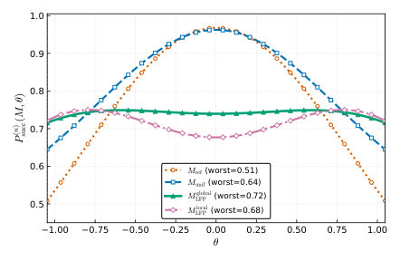
<figcaption class="paper-figure-caption"><b>Fig 1.</b> FIG. 1: Success-probability profiles for the binary nonorthogonal qubit model.</figcaption>
</figure>
<figure class="paper-figure-card">
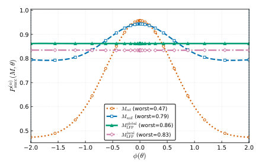
<figcaption class="paper-figure-caption"><b>Fig 2.</b> FIG. 2: Success-probability profiles for the three-state qutrit model.</figcaption>
</figure>
<figure class="paper-figure-card">
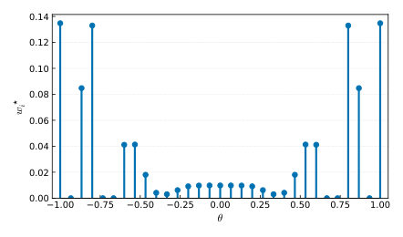
<figcaption class="paper-figure-caption"><b>Fig 3.</b> FIG. 3: Least favorable prior w⋆on the nuisance-parameter grid for the three-state qutrit model.</figcaption>
</figure>
</div>

<p><strong>Summary.</strong> This paper develops a robust framework for quantum-state discrimination under unknown unitary noise by solving a minimax decision problem. It introduces the Least Favorable Prior (LFP) and shows that the optimal measurement can be found by solving a dual SDP. The resulting LFP-based measurement significantly improves the worst-case success probability compared to standard methods.</p>
<p><strong>Why it may be interesting.</strong> This work provides a rigorous, mathematically grounded method for designing quantum measurements that are robust against unknown environmental noise or systematic errors, which is crucial for practical quantum information processing.</p>
<details>
<summary>Detailed structure</summary>
<p><strong>Main problem.</strong> The paper addresses robust quantum-state discrimination when the candidate states are corrupted by an unknown, common unitary perturbation (a nuisance factor). The goal is to find a measurement that minimizes the worst-case error probability over all possible perturbations.</p>
<p><strong>Main result.</strong> The measurement derived using the Least Favorable Prior (LFP) achieves a substantially improved worst-case success probability and flattens the success-probability profile compared to standard optimal measurements.</p>
<p><strong>Method.</strong> The problem is formulated as a minimax decision problem, which is solved by relating it to a Bayes measurement problem using the LFP. This optimization is implemented via Semidefinite Programming (SDP) techniques.</p>
<p><strong>Model / system.</strong> The study considers discriminating between $K$ candidate quantum states $\{
ho_a\}_{a=1}^K$ in a finite-dimensional Hilbert space, where the actual states are perturbed by $
ho_a(   heta) = U(  heta)
ho_aU(  heta)^\dagger$. The perturbation $  heta$ acts as a nuisance parameter.</p>
<p><strong>Key observables.</strong> Worst-case success probability ($V_{	ext{succ}}^{n,N}$), success-probability profiles $P_{	ext{succ}}(M, 	heta)$, and the weight distribution of the LFP ($\mathbf{w}^\star$).</p>
<p><strong>Important parameters / regimes.</strong> The number of states $K$, the dimension of the Hilbert space, and the structure of the nuisance parameter space $\Theta$.</p>
<p><strong>Assumptions / limitations.</strong> The theoretical framework handles continuous $\Theta$ but relies on discretizing it into a finite grid $\Theta_N$ for practical SDP computation.</p>
<p><strong>Figures summary.</strong> Figures compare success-probability profiles for different measurements (LFP vs. Uniform-prior vs. Reference-point) in a qutrit model, showing the LFP measurement's superior worst-case performance. Table II summarizes these worst-case probabilities.</p>
<p><strong>Paper structure.</strong> The paper first formulates the minimax risk and introduces the LFP concept. It then develops the mathematical machinery by showing the equivalence between the minimax problem and a Bayes problem over the LFP. Finally, it applies this framework to numerical examples (qubit and qutrit models) to demonstrate the performance gains.</p>
</details>
<details>
<summary>Abstract</summary>
<p>We study robust K-ary quantum-state discrimination when all candidate states are affected by the same unknown common unitary perturbation. The unknown perturbation does not represent the label to be identified, but acts as a nuisance factor that changes the performance of a fixed measurement. We formulate the problem as a minimax decision problem over the possible perturbations and propose using the Bayes-optimal collective measurement associated with a least favorable prior (LFP) on the nuisance-parameter space. For a finite discretization of this space, we show that the LFP can be computed by a semidefinite program and that the corresponding value coincides with the finite-grid minimax success probability. As numerical demonstrations, we consider a binary nonorthogonal qubit model and a nonorthogonal three-state qutrit model with an unknown common unitary perturbation. The LFP-based measurement substantially flattens the success-probability profile and improves the worst-case success probability compared with a reference-point optimal measurement and a uniform-prior Bayes measurement. The resulting LFP concentrates its weight on regions of the nuisance-parameter space that actively limit the robust discrimination performance, thereby providing both a constructive measurement design and a diagnostic description of the difficult nuisance-parameter regimes.</p>
</details>
<p><sub><a href="#top">↑ back to top</a></sub></p>

<p><a id="paper-2609.03948"></a></p>
<h3 id="three-observable-measurement-of-the-critical-velocity-in-a-paraxial-superfluid-of-light-flowing-past-a-mobile-impurity"><a href="http://arxiv.org/abs/2609.03948v1">Three-observable measurement of the critical velocity in a paraxial superfluid of light flowing past a mobile impurity</a></h3>
<p><strong>Authors:</strong> T. Aladjidi, M. Baker-Rasooli, T. D. Ferreira, A. Bramati, M. Albert, Q. Glorieux, P. -É. Larré<br>
<strong>Type:</strong> experiment · <strong>Category:</strong> quantum gases · <strong>PDF:</strong> <a href="https://arxiv.org/pdf/2609.03948v1">https://arxiv.org/pdf/2609.03948v1</a><br>
<strong>Analysis basis:</strong> full PDF text, analyzed in chunks
<strong>Topic relevance:</strong> <code>analog quantum simulation</code> <strong>3/5</strong> · <code>driven-dissipative phase transition</code> <strong>3/5</strong> · <code>non-equilibrium universality</code> <strong>3/5</strong> · <code>quantum optics experiment</code> <strong>3/5</strong> · <code>quantum measurements</code> <strong>2/5</strong> · <code>Frenkel-Kontorova</code> <strong>1/5</strong> · <code>correlated / nonlocal dissipation</code> <strong>1/5</strong> · <code>interference shaping light</code> <strong>1/5</strong> · <code>methods for driven-dissipative</code> <strong>1/5</strong></p>
<div class="figure-strip-hint">↔ Scroll figures horizontally</div>
<div class="paper-figures-scroll">
<figure class="paper-figure-card">
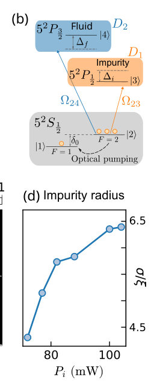
<figcaption class="paper-figure-caption"><b>Fig 1.</b> Figure 1: (a) Schematic of the system. The 2D paraxial superfluid of light (transverse slices on the sketch) is generated using a wide Gaussian laser beam (red) propagating through a warm 87Rb vapor (blue). The optical impurity at the center of the planar superfluid is created by injecting a narrower Gaussian beam (gray). The relative angle between the red beam and the axis along the rubidium cell controls the incident velocity of the superfluid past the impurity, which is on-axis when the fluid is at rest. (b) The fluid beam operates near the D2 line (|2〉→|4〉) of 87Rb with a red detuning ∆f &lt; 0. The impurity beam operates near the D1 line (|2〉→|3〉) with a blue detuning ∆i &gt; 0. Optical...</figcaption>
</figure>
<figure class="paper-figure-card">
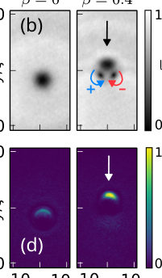
<figcaption class="paper-figure-caption"><b>Fig 2.</b> Figure 2: The impurity radius in units of the healing length is σ/ξ ≃6.4. (a) Num- ber of quantized vortices nucleated—in the form of vortex-antivortex pairs—in the superfluid as a function of the Mach number β. The dashed line indicates the onset of the first pair at the critical Mach number βc ≃0.3. For larger β, additional pairs are produced [37]. The decrease observed for β &gt; 0.7 is an artifact of our tracking algorithm: the almost vanishing density at the impurity edge where the vortices are nucleated (see main text) can lead to an undercounting of the ±2π phase windings characterizing these excitations. (b) Field-amplitude distribution p</figcaption>
</figure>
<figure class="paper-figure-card">
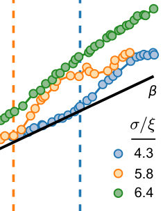
<figcaption class="paper-figure-caption"><b>Fig 3.</b> Figure 3: Impurity velocity relative to the incident flow in units of the sound velocity, ∆vi/cs [see Eqs. (5)], as a function of the Mach number β, at the exit of the rubidium vapor. This quantity corresponds to the relative angle between the impurity and fluid beams in cs units. The solid line represents the superfluid baseline ∆vi/cs = β. The blue, orange, and green circles correspond to the normalized impurity radii σ/ξ ≃4.3, 5.8, and 6.4, respectively. The dashed line for each impurity radius marks the critical Mach number βc right after which ∆vi positively deviates by 10% from the baseline, signaling the onset of upstream motion toward +ˆy.</figcaption>
</figure>
</div>

<p><strong>Summary.</strong> This research reports the measurement of the critical velocity in a superfluid of light flowing past an impurity using a sophisticated dual-wavelength optical setup. By independently measuring vortex nucleation, hydrodynamic force, and impurity displacement, the authors cross-validate the critical velocity threshold. This establishes the superfluid of light as a versatile and reliable platform for testing quantum hydrodynamic theories.</p>
<p><strong>Why it may be interesting.</strong> This work provides a highly controlled, optical platform to study fundamental quantum hydrodynamic phenomena, such as superfluid critical velocities and vortex dynamics, which are central topics in both quantum gas and quantum optics research.</p>
<details>
<summary>Detailed structure</summary>
<p><strong>Main problem.</strong> The paper measures the critical velocity at which a paraxial superfluid of light transitions to a dissipative state when flowing past a mobile impurity.</p>
<p><strong>Main result.</strong> The critical velocity was measured using three independent diagnostics (vortex count, hydrodynamic force, and impurity velocity), yielding consistent results that systematically fall below the Landau criterion.</p>
<p><strong>Method.</strong> The critical velocity is determined by monitoring the onset of energy dissipation, specifically through the nucleation of quantized vortices, while simultaneously measuring the force and displacement on the impurity.</p>
<p><strong>Model / system.</strong> The system is a 2D paraxial superfluid of light, modeled by the nonlinear Schrödinger equation, flowing past a highly repulsive, finite-mass impurity created optically in a warm vapor of Rb-87.</p>
<p><strong>Key observables.</strong> Number of nucleated vortices, hydrodynamic force on the impurity, and the impurity's displacement velocity relative to the flow.</p>
<p><strong>Important parameters / regimes.</strong> Mach number (v0/cs), impurity radius ($\sigma$), and the ratio $\sigma/\xi$ (impurity size to healing length).</p>
<p><strong>Assumptions / limitations.</strong> The analysis relies on the superfluid being governed by the NLS equation and assumes the three diagnostic methods provide a self-consistent benchmark for the critical transition.</p>
<p><strong>Figures summary.</strong> Figures likely show the experimental setup and plots comparing the critical velocity ($eta_c$) extracted from the three different measurement techniques as a function of the impurity radius ($\sigma/\xi$).</p>
<p><strong>Paper structure.</strong> The paper establishes the physical model (NLS equation for superfluid light), details the experimental setup using a dual-wavelength scheme, presents the three complementary measurement techniques, and concludes by cross-validating the results to establish a robust benchmark for the critical velocity.</p>
</details>
<details>
<summary>Abstract</summary>
<p>We report the measurement of the critical velocity of a paraxial superfluid of light flowing past a mobile impurity, realized using a dual-wavelength optical scheme in a warm vapor of $^{87}\text{Rb}$. The superflow is two-dimensional by nature, while the impurity features a highly repulsive potential, a large tunable radius, and a finite mass. The critical velocity is evaluated by simultaneously monitoring three complementary observables: the number of vortices nucleated in the wake of the impurity, the hydrodynamic force exerted on it, and its displacement velocity relative to the flow. These independent methods yield consistent values for the critical velocity, which remain systematically below the Landau criterion and decrease with the impurity radius, in qualitative agreement with theoretical expectations. Our results demonstrate the reliability of these combined diagnostics, establishing paraxial superfluids of light as a versatile platform for exploring the impurity problem in quantum hydrodynamics.</p>
</details>
<p><sub><a href="#top">↑ back to top</a></sub></p>

<p><a id="paper-2609.03991"></a></p>
<h3 id="boundary-and-screening-induced-bubbly-phases-in-autophoretic-active-matter"><a href="http://arxiv.org/abs/2609.03991v1">Boundary- and Screening-Induced Bubbly Phases in Autophoretic Active Matter</a></h3>
<p><strong>Authors:</strong> Kingshuk Panja, Günther Turk, Rajesh Singh<br>
<strong>Type:</strong> theory · <strong>Category:</strong> statistical mechanics · <strong>PDF:</strong> <a href="https://arxiv.org/pdf/2609.03991v1">https://arxiv.org/pdf/2609.03991v1</a><br>
<strong>Analysis basis:</strong> full PDF text, analyzed in chunks
<strong>Topic relevance:</strong> <code>driven-dissipative phase transition</code> <strong>3/5</strong> · <code>methods for driven-dissipative</code> <strong>3/5</strong> · <code>non-equilibrium universality</code> <strong>3/5</strong> · <code>analog quantum simulation</code> <strong>2/5</strong> · <code>Frenkel-Kontorova</code> <strong>1/5</strong> · <code>Keldysh / 2PI / non-Gaussian methods</code> <strong>1/5</strong> · <code>correlated / nonlocal dissipation</code> <strong>1/5</strong></p>
<div class="figure-strip-hint">↔ Scroll figures horizontally</div>
<div class="paper-figures-scroll">
<figure class="paper-figure-card">
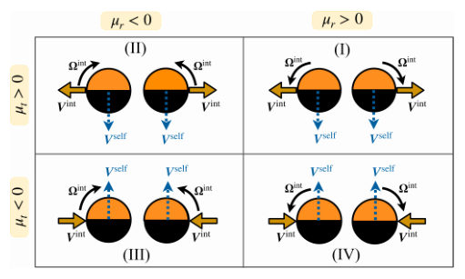
<figcaption class="paper-figure-caption"><b>Fig 1.</b> FIG. 1. Schematics of Janus particles, half-covered by a cat- alytic cap (orange), interacting with both each other and a nearby boundary. Here, we provide a representation of the various types of phoretic interactions permitted by the model outlined in section II. In this paper, we specifically focus on region IV, where µt &lt; 0 and µr &gt; 0. In this region, particles are attracted to each other, but they also tend to turn away from each other (see Video - I). In this model, the direction of self-propulsion of a particle points away from the cap when µt &gt; 0 and towards the cap when µt &lt; 0. Furthermore, the velocity resulting from interaction with another particle is di- rected away from that...</figcaption>
</figure>
<figure class="paper-figure-card">
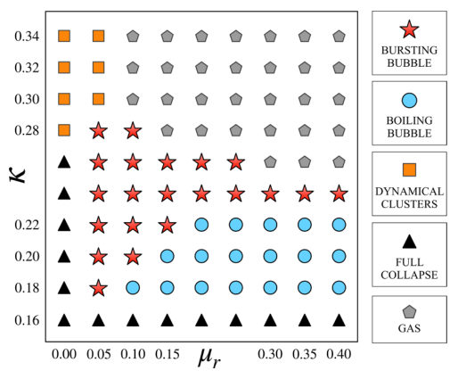
<figcaption class="paper-figure-caption"><b>Fig 2.</b> FIG. 2. Phase diagram in the plane of screening length κ (see Eq. 4) and strength of chemo-repulsive torque µr for the case of Λc = 1. The five phases observed are: bursting bubbles, boiling bubbles, dynamical clusters, full collapse to a single cluster, and a gaseous phase. The bubbly phases are obtained as intermediate phases between well known phases of full collapse and dynamic clusters.</figcaption>
</figure>
<figure class="paper-figure-card">
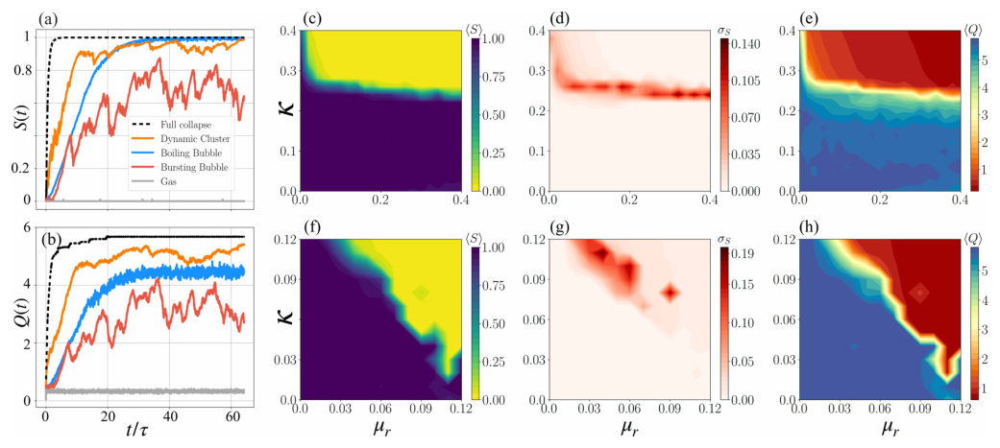
<figcaption class="paper-figure-caption"><b>Fig 3.</b> FIG. 3. Structural metrics of the system. (a) Time evolution of the fraction of total cluster size, S(t). (b) Time evolution of the coordination number, Q(t). The distinct phases — full collapse, dynamical clusters, boiling bubble, bursting bubble and gas — are distinguished by their steady-state time averages (⟨S⟩, ⟨Q⟩) and temporal fluctuation magnitude (σS). Panels (c-h) are phase diagrams of the system in the (µr, κ) parameter space for Λc = 1 (top row) and Λc = 0 (bottom row). The left column (c, d) shows the time-averaged cluster size fraction ⟨S⟩, the middle column (d, g) shows the temporal fluctuation of S over time, σS, and the right column (e, h) shows the time-averaged...</figcaption>
</figure>
<figure class="paper-figure-card">
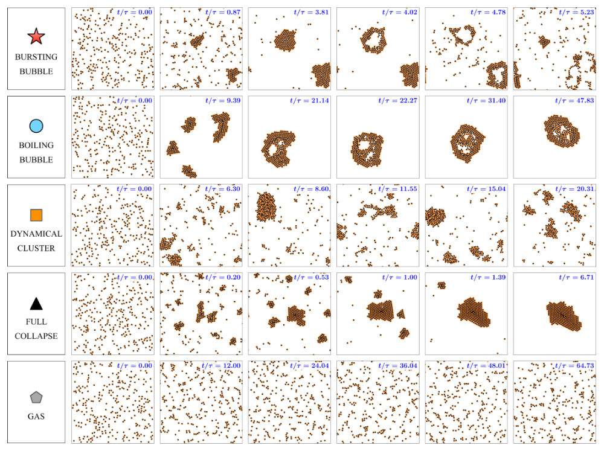
<figcaption class="paper-figure-caption"><b>Fig 4.</b> FIG. 4. The snapshots of evolution and formation of each phase, as illustrated in Fig.-2, at different time steps. In every phase, we start with randomly distributed particle positions and orientations in the system. The first row depicts a bursting bubble, where particles form small clusters that burst before transitioning into a fully collapsed cluster phase. The second row illustrates the behavior of a boiling bubble, demonstrating a manifestly non-equilibrium steady state distinct from a bursting bubble. The third and fourth rows present the dynamical clusters phase and the full collapse phase, respectively. The last row shows the gas phase, which we have observed for a long duration to...</figcaption>
</figure>
<figure class="paper-figure-card">
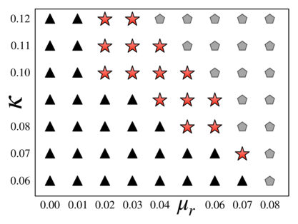
<figcaption class="paper-figure-caption"><b>Fig 5.</b> FIG. 5. Phase diagram in the plane of screening length κ (see Eq. 4) and strength of chemo-repulsive torque µr for Λc = 0. Markers have same meaning as in Fig.2. This figures show that we get bursting bubbles at Λc = 0 in a very small parameter region. On the other hand, we have not seen any boiling bubble in the case of Λc = 0.</figcaption>
</figure>
</div>

<p><strong>Summary.</strong> This paper systematically maps the complex, non-equilibrium phase behavior of active particles driven by chemical gradients. By varying chemical screening and boundary conditions, the authors predict the emergence of novel 'bubbly' phases, distinguishing them from simple collapse or gas states. These findings offer predictive rules for controlling active assembly in microfluidic settings.</p>
<p><strong>Why it may be interesting.</strong> The study provides a detailed framework for understanding non-equilibrium phase transitions in active matter, which shares conceptual links with driven-dissipative quantum systems and pattern formation in open quantum systems.</p>
<details>
<summary>Detailed structure</summary>
<p><strong>Main problem.</strong> The study investigates the non-equilibrium phase behavior of autophoretic active particles, focusing on the emergence of novel bubbly phases influenced by boundaries and chemical screening.</p>
<p><strong>Main result.</strong> The research reports the existence of boundary- and screening-induced bubbly phases (boiling and bursting bubbles), showing that boundary conditions actively select the non-equilibrium steady states.</p>
<p><strong>Method.</strong> The authors employed systematic particle-resolved simulations to map out phase diagrams by analyzing the collective dynamics across varying physical parameters.</p>
<p><strong>Model / system.</strong> The system consists of autophoretic active particles (Janus particles) whose motion is governed by chemo-attractive translational forces and chemo-repulsive rotational torques. The dynamics are modeled using equations of motion incorporating phoretic interactions and excluded-volume forces.</p>
<p><strong>Key observables.</strong> Steady-state cluster fraction ($\langle S 
angle$), temporal fluctuation magnitude ($\sigma_S$), and coordination number ($\langle Q 
angle$) form a diagnostic metric triad.</p>
<p><strong>Important parameters / regimes.</strong> Screening parameter ($\kappa$), torque magnitude ($\mu_r$), and boundary condition coefficients ($\Lambda_c$) are key control parameters.</p>
<p><strong>Assumptions / limitations.</strong> The analysis relies on particle-resolved simulations and uses the Weeks-Chandler-Andersen (WCA) potential for repulsive interactions.</p>
<p><strong>Figures summary.</strong> Figures illustrate phase diagrams showing transitions between gas, bubbly, and collapsed states as a function of $\kappa$ and $\mu_r$, and demonstrate structural anisotropy based on $\kappa$.</p>
<p><strong>Paper structure.</strong> The paper systematically analyzes the influence of chemical screening ($\kappa$) and boundary conditions ($\Lambda_c$) on the phase diagram, using the metric triad to distinguish between macro-phase separation, bubbly states, and gas phases.</p>
</details>
<details>
<summary>Abstract</summary>
<p>Spatial confinement and chemical screening fundamentally reshape the non-equilibrium phase behavior of autophoretic active particles. Here, we present a systematic study mapping the collective dynamics of self-propelled particles governed by chemo-attractive translational forces ($μ_t < 0$) and chemo-repulsive rotational torques ($μ_r > 0$) across varying screening parameters $κ$, torque magnitudes $μ_r$, and boundary condition coefficients $Λ^c$. Beyond standard chemotactic macro-phase separation and dynamic clustering, we report the emergence of novel boundary- and screening-induced bubbly phases, classified into boiling and bursting bubbles. Using a metric triad of steady-state cluster fraction $\langle S \rangle$, temporal fluctuation magnitude $σ_S$, and coordination number $\langle Q \rangle$, we draw phase diagrams to demarcate phases for no-flux boundaries ($Λ^c = 1$) and chemically permeable interfaces ($Λ^c = 0$) . Increasing chemical screening ($κ$) systematically suppresses long-range attraction, driving sequential phase transitions from macro-scale collapse toward bubbly states, dynamic micro-clusters, and homogeneous gas phases, while simultaneously inducing aggregate shape anisotropy. These findings provide predictive design rules for controlling active assembly and transport in microfluidic environments.</p>
</details>
<p><sub><a href="#top">↑ back to top</a></sub></p>

<p><a id="paper-2609.03076"></a></p>
<h3 id="deterministic-nanofabrication-for-engineering-nanowire-quantum-dot-devices"><a href="http://arxiv.org/abs/2609.03076v1">Deterministic nanofabrication for engineering nanowire quantum dot devices</a></h3>
<p><strong>Authors:</strong> Tarun Patel, Matteo Pennacchietti, Greg Holloway, Stephen R. Harrigan, Sayan Gangopadhyay, Anthony Drouin, Megha Jain, Dan Dalacu, Philip J. Poole, Sasan Vosoogh-Grayli, Michael E. Reimer<br>
<strong>Type:</strong> both · <strong>Category:</strong> quantum information and computing · <strong>PDF:</strong> <a href="https://arxiv.org/pdf/2609.03076v1">https://arxiv.org/pdf/2609.03076v1</a><br>
<strong>Analysis basis:</strong> full PDF text, analyzed in chunks
<strong>Topic relevance:</strong> <code>QC/QI experiment</code> <strong>3/5</strong> · <code>quantum optics experiment</code> <strong>3/5</strong> · <code>Tavis-Cummings &amp; cavity-many-emitter</code> <strong>2/5</strong> · <code>analog quantum simulation</code> <strong>2/5</strong> · <code>driven-dissipative phase transition</code> <strong>1/5</strong> · <code>interference shaping light</code> <strong>1/5</strong> · <code>methods for driven-dissipative</code> <strong>1/5</strong> · <code>quantum measurements</code> <strong>1/5</strong></p>
<div class="figure-strip-hint">↔ Scroll figures horizontally</div>
<div class="paper-figures-scroll">
<figure class="paper-figure-card">
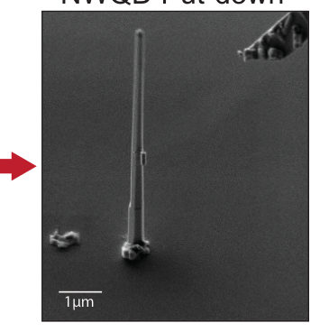
<figcaption class="paper-figure-caption"><b>Fig 1.</b> Fig. 1: Visualizing deterministic pick-and-place transfer of a NWQD in a vertical- to-vertical geometry. (a) SEM images of the NWQD detachment from the growth substrate. From left to right, a tungsten tip (green) is slowly pushed against the InP nanowire (pink). The elimination of bending and the release of built-up elastic energy in the nanowire confirm its detachment from the growth substrate. (b) The detached nanowire is glued using focused electron beam induced deposition (EBID) of SiOx to the tungsten tip and picked-up (left panel). The nanowire is secured to the target substrate by additional SiOx deposition at the base and the tungsten tip is detached by pulling away from the...</figcaption>
</figure>
<figure class="paper-figure-card">
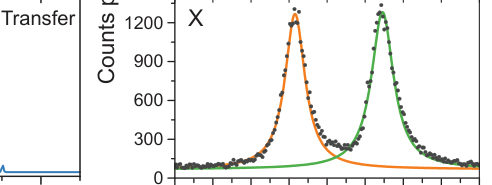
<figcaption class="paper-figure-caption"><b>Fig 2.</b> Fig. 2: (a) Photoluminescence (PL) spectra of NWQD5 before and after transfer on a Au/SiO2 substrate under pulsed above-band excitation. The three prominent emission lines corresponding to the biexciton (XX), exciton (X) and negative trion (X−) decay are labeled. (b) High resolution PL spectrum of the XX (top) and X (bottom) emission lines of the transferred NWQD5 measured using a scanning Fabry-Perot etalon. Two polarized peaks are observed due to the fine structure splitting (FSS) of the QD. Individual peaks are fit to a Lorentzian linewidth of 0.71 ± 0.01 GHz (H) and 0.64 ± 0.01 GHz (V) for the X transition, and 0.89 ± 0.02 GHz (H) and 0.78 ± 0.02 GHz (V) for the XX transition with an...</figcaption>
</figure>
<figure class="paper-figure-card">
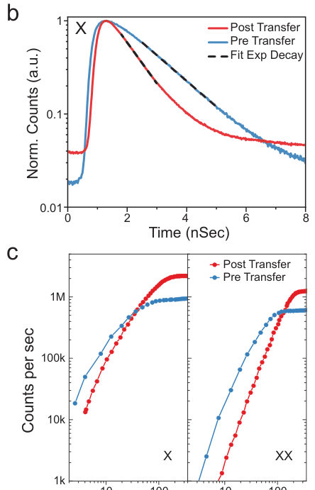
<figcaption class="paper-figure-caption"><b>Fig 3.</b> Fig. 3: NWQD on a Au/SiO2 mirror. (a) 2D cross-section of the electric field intensity for a tapered nanowire on an Au/SiO2 substrate from a 3D FDTD simulation. A weak cavity is formed between the bottom mirror substrate and the dipole as is evident by the standing wave in the intensity profile. The upward emission from the QD couples to a guided waveguide mode, visible as a continuous dark red region above the dipole, confined within the nanowire. As the mode propagates along the adiabatic taper, it gradually expands beyond the nanowire confinement, transitioning into a free-space mode with minimal back-reflections at a height of approximately 4– 5 µm above the substrate.(b) Lifetime...</figcaption>
</figure>
<figure class="paper-figure-card">
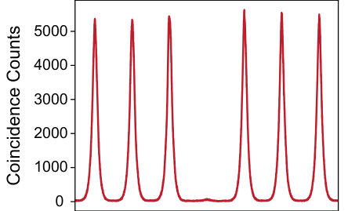
<figcaption class="paper-figure-caption"><b>Fig 4.</b> Fig. 4: Two-photon excitation (TPE) of NWQD5 on a Au/SiO2 mirror. (a) Mea- sured photon count rates of the exciton versus excitation power showing clear Rabi oscillations. (b) Hanbury-Brown-Twiss (HBT) correlation histogram of the exciton at π-pulse (∼100 nW) with a g(2)(0) = 0.0212 ± 0.0001.</figcaption>
</figure>
<figure class="paper-figure-card">

<figcaption class="paper-figure-caption"><b>Fig 5.</b> Figure 4a presents the detected count rate of exciton emission as a function of the</figcaption>
</figure>
</div>

<p><strong>Summary.</strong> The authors present a novel, deterministic pick-and-place technique to transfer nanowire quantum dots (NWQDs) while preserving their high optical quality. By combining this transfer method with bottom mirror structures and electrostatic gates, they demonstrate the creation of highly efficient, tunable single-photon sources crucial for quantum technologies.</p>
<p><strong>Why it may be interesting.</strong> This work directly addresses the engineering challenge of integrating quantum emitters into complex photonic circuits, which is foundational for scalable quantum light sources and quantum networking components.</p>
<details>
<summary>Detailed structure</summary>
<p><strong>Main problem.</strong> The primary challenge addressed is developing a scalable, deterministic method to engineer nanowire quantum dot (NWQD) devices by transferring them while maintaining their critical vertical growth geometry.</p>
<p><strong>Main result.</strong> The developed pick-and-place transfer technique successfully preserves high optical quality, enabling the integration of bottom mirrors for 75% photon extraction efficiency and electrostatic gates for wavelength tuning.</p>
<p><strong>Method.</strong> The work combines a deterministic, gas-assisted pick-and-place transfer technique with advanced optical characterization (PL, lifetime, HBT measurements) and theoretical modeling (FDTD simulations).</p>
<p><strong>Model / system.</strong> The system involves semiconductor NWQDs (e.g., InAsP in InP) integrated into photonic nanowires. The process involves transferring these QDs from a growth substrate to arbitrary templates, such as those incorporating bottom gold mirrors or gate electrodes.</p>
<p><strong>Key observables.</strong> Low-multiphoton probability ($g_2(0)=0.002$), high indistinguishability ($>80\%$), enhanced photon extraction efficiency (up to 75%), and measurable spectral tuning via gates.</p>
<p><strong>Important parameters / regimes.</strong> The transfer process itself, the efficiency enhancement factor (e.g., 1.58 Purcell enhancement), and the achievable wavelength tunability ($\sim 3.6 	ext{ GHz}$).</p>
<p><strong>Assumptions / limitations.</strong> The transfer process is assumed to preserve the quantum optical properties of the QD emission, and theoretical models rely on specific coupling strengths and modal reflectivities.</p>
<p><strong>Figures summary.</strong> Figures illustrate the deterministic pick-and-place transfer steps (detachment, gluing, placement) and show PL spectra before and after transfer, confirming spectral and linewidth preservation.</p>
<p><strong>Paper structure.</strong> The paper details the development of the deterministic transfer technique, followed by comprehensive optical characterization demonstrating enhanced light collection efficiency using bottom mirrors, and finally, tuning capabilities using electrostatic gates.</p>
</details>
<details>
<summary>Abstract</summary>
<p>Semiconductor quantum dots (QDs) are a leading platform for realising bright, wavelength-tunable sources of single and entangled photon pairs for photonic quantum technologies. Site-selected nanowire quantum dots (NWQDs) are a promising platform for fabricating such photonic devices in a scalable manner. However, implementing additional structures around the photonic nanowire while maintaining its vertical growth geometry has remained a challenge. In this work, we develop a deterministic pick-and-place technique to conduct a vertical-to-vertical transfer of NWQDs from the growth substrate to arbitrary templates. Using this transfer technique, we enhance the photon extraction efficiency to 75% by implementing a bottom gold mirror and tune the emission wavelength by 3.6 GHz via implementing electrostatic gates around the QD. Importantly, we measure low-multiphoton probability (g^(2)(0) = 0.002) and high indistinguishability (&gt;80% for +/-100 ps) of the QD emission after the transfer process, yielding high-quality devices. These results demonstrate the repeatability and versatility of the developed transfer technique, which is an enabling step towards scalable single and entangled photon sources.</p>
</details>
<p><sub><a href="#top">↑ back to top</a></sub></p>

<p><a id="paper-2609.03179"></a></p>
<h3 id="accelerating-stochastic-processes-through-nonequilibrium-driving-thermodynamic-constraints-on-the-maximum-speed-up"><a href="http://arxiv.org/abs/2609.03179v1">Accelerating stochastic processes through nonequilibrium driving: Thermodynamic constraints on the maximum speed-up</a></h3>
<p><strong>Authors:</strong> Davide Santolin, Gianmaria Falasco<br>
<strong>Type:</strong> theory · <strong>Category:</strong> statistical mechanics · <strong>PDF:</strong> <a href="https://arxiv.org/pdf/2609.03179v1">https://arxiv.org/pdf/2609.03179v1</a><br>
<strong>Analysis basis:</strong> full PDF text, analyzed in chunks
<strong>Topic relevance:</strong> <code>driven-dissipative phase transition</code> <strong>3/5</strong> · <code>non-equilibrium universality</code> <strong>3/5</strong> · <code>Keldysh / 2PI / non-Gaussian methods</code> <strong>2/5</strong> · <code>methods for driven-dissipative</code> <strong>2/5</strong> · <code>analog quantum simulation</code> <strong>1/5</strong> · <code>correlated / nonlocal dissipation</code> <strong>1/5</strong> · <code>quantum measurements</code> <strong>1/5</strong></p>
<div class="figure-strip-hint">↔ Scroll figures horizontally</div>
<div class="paper-figures-scroll">
<figure class="paper-figure-card">
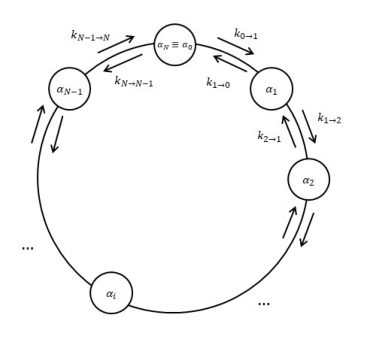
<figcaption class="paper-figure-caption"><b>Fig 1.</b> FIG. 1. Linear chain of reactions with periodic boundary conditions, αN ≡α0. We assume microscopic rates fulfill local detailed balance for thermodynamic consistency.</figcaption>
</figure>
<figure class="paper-figure-card">
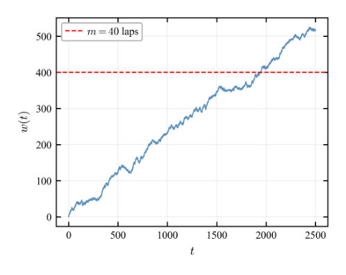
<figcaption class="paper-figure-caption"><b>Fig 2.</b> FIG. 2. Typical evolution of the time-averaged current w(t) counting net forward transitions obtained by the Gillespie al- gorithm. The horizontal red dashed line marks the absorbing threshold w∗= 400 (m∗= 40 laps). When the observable reach it in the conditioned ensemble, the dynamics is halted.</figcaption>
</figure>
<figure class="paper-figure-card">
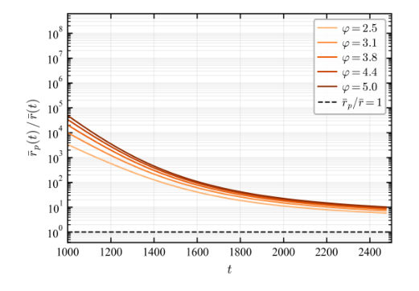
<figcaption class="paper-figure-caption"><b>Fig 3.</b> FIG. 4. Ratio ¯rp(t)/¯r(t) between perturbed and controlled survival rates for different local perturbations. The condition ¯rp(t) ≫¯r(t) is well satisfied, corresponding to speed-up fac- tors of order at least 10, up to 104.</figcaption>
</figure>
<figure class="paper-figure-card">
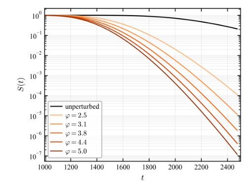
<figcaption class="paper-figure-caption"><b>Fig 4.</b> FIG. 3. Survival probabilities S(t) (controlled) and Sp(t) (lo- cally perturbed) for several values of the rate enhancement φ. The local perturbation speeds up the completion of the process (reaching w∗) compared to the controlled dynamics.</figcaption>
</figure>
<figure class="paper-figure-card">
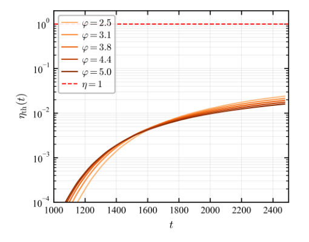
<figcaption class="paper-figure-caption"><b>Fig 5.</b> FIG. 5. Tightness ratio ηth(t) for local perturbations. Time window is cut at t ∈[1000, 2500] for better visualization. Tightness ratio remains well below unity for all values of φ, confirming the validity of the bound (52) for local perturba- tions.</figcaption>
</figure>
</div>

<p><strong>Summary.</strong> This work develops new, thermodynamically grounded bounds on how much faster a stochastic process can survive when driven away from equilibrium. By analyzing both general and rare-event dynamics, the authors provide distinct linear and exponential bounds related to entropy production and excess heat. This is a significant theoretical advancement for understanding non-equilibrium dynamics in mesoscopic systems.</p>
<p><strong>Why it may be interesting.</strong> The rigorous connection of dynamical speed-up bounds to fundamental thermodynamic quantities like entropy production and heat generation provides powerful, non-equilibrium constraints applicable to open quantum systems and energy dissipation studies.</p>
<details>
<summary>Detailed structure</summary>
<p><strong>Main problem.</strong> The paper derives new theoretical bounds controlling the maximum speed-up achievable in the survival rate of stochastic processes when subjected to non-equilibrium driving perturbations.</p>
<p><strong>Main result.</strong> It establishes distinct bounds: a linear bound dependent on entropy production for general rates, and an exponential bound determined by excess heat for rare, constant-rate processes.</p>
<p><strong>Method.</strong> The analysis employs nonlinear response theory, importance sampling, and techniques from large deviation theory applied to path probabilities in Markov jump processes and overdamped diffusions.</p>
<p><strong>Model / system.</strong> The study applies to general mesoscopic systems modeled as continuous-time Markov jump processes and overdamped diffusions, exemplified by a unicyclic network and forced diffusion in a bistable potential.</p>
<p><strong>Key observables.</strong> Survival probability $S(t)$, survival rate $r(t)$, and the difference in survival rates $ar{r}_p - ar{r}$.</p>
<p><strong>Important parameters / regimes.</strong> Perturbation strength, entropy production rate, and the excess heat generated by the perturbation.</p>
<p><strong>Assumptions / limitations.</strong> The derivation assumes that the path probability densities are absolutely continuous, excluding changes like varying the temperature in Langevin dynamics.</p>
<p><strong>Figures summary.</strong> The notes mention comparing analytical predictions (e.g., for the Laplace transform of survival probability) against numerical integrations and simulations.</p>
<p><strong>Paper structure.</strong> The paper follows a structure of introducing the framework, deriving the bounds using nonlinear response theory, presenting the bounds in different mathematical forms, connecting these bounds explicitly to thermodynamic quantities, and concluding with model examples.</p>
</details>
<details>
<summary>Abstract</summary>
<p>We derive a new set of bounds controlling the speed-up of the survival rate of trajectory-dependent observables induced by the application of a perturbation. Via the study of survival probabilities in two different contexts, continuous-time Markov jump processes and overdamped diffusions, we obtain different fashions of the bound on the achievable boost. These bounds, obtained by a nonlinear response theory of constrained path probabilities, are explicitly linked to thermodynamics. For arbitrary time-dependent survival rates, we find a linear bound that depends on both the perturbation strength and the entropy production rate prior to the perturbation. For rare processes characterized by a constant survival rate, the bound is exponential and is determined by the excess heat generated by the perturbation. We exemplify the inequalities on two prototypical model systems, namely, a unicyclic network and forced diffusion in a bistable potential.</p>
</details>
<p><sub><a href="#top">↑ back to top</a></sub></p>

<p><a id="paper-2609.03638"></a></p>
<h3 id="entanglement-dynamics-of-accelerated-atoms-with-environment-induced-interactions"><a href="http://arxiv.org/abs/2609.03638v1">Entanglement dynamics of accelerated atoms with environment-induced interactions</a></h3>
<p><strong>Authors:</strong> Xuerui Zhou, Chenhao Ma, Zixu Zhao<br>
<strong>Type:</strong> theory · <strong>Category:</strong> other · <strong>PDF:</strong> <a href="https://arxiv.org/pdf/2609.03638v1">https://arxiv.org/pdf/2609.03638v1</a><br>
<strong>Analysis basis:</strong> full PDF text, analyzed in chunks
<strong>Topic relevance:</strong> <code>correlated / nonlocal dissipation</code> <strong>3/5</strong> · <code>Keldysh / 2PI / non-Gaussian methods</code> <strong>2/5</strong> · <code>driven-dissipative phase transition</code> <strong>2/5</strong> · <code>methods for driven-dissipative</code> <strong>2/5</strong> · <code>non-equilibrium universality</code> <strong>2/5</strong> · <code>analog quantum simulation</code> <strong>1/5</strong> · <code>quantum measurements</code> <strong>1/5</strong></p>
<div class="figure-strip-hint">↔ Scroll figures horizontally</div>
<div class="paper-figures-scroll">
<figure class="paper-figure-card">

<figcaption class="paper-figure-caption"><b>Fig 1.</b> FIG. 1: The two accelerated atoms are separated with a distance L and the reflecting boundary is located at z = 0.</figcaption>
</figure>
<figure class="paper-figure-card">

<figcaption class="paper-figure-caption"><b>Fig 2.</b> FIG. 2: The time evolution of concurrence for Lω = 0.1 with zω = {1, 10} and a/ω = {0.1, 10} initially in the state |10⟩. The solid (black) and dot-dashed (red) lines represent uniformly accelerated atoms with and without environment-induced interactions, respectively. The dotted line (blue) represents only the environment-induced atom- atom interaction, and the dashed line (green) represents only the environment-induced atom-plate interaction.</figcaption>
</figure>
<figure class="paper-figure-card">

<figcaption class="paper-figure-caption"><b>Fig 3.</b> FIG. 3: The time evolution of concurrence for Lω = 1 with zω = {0.1, 0.5, 10} and a/ω = {0.1, 5} initially in the state |10⟩. The solid (black) and dot-dashed (red) lines represent uniformly accelerated atoms with and without environment-induced interactions, respectively. The dotted line (blue) represents only the environment-induced atom- atom interaction, and the dashed line (green) represents only the environment-induced atom-plate interaction.</figcaption>
</figure>
<figure class="paper-figure-card">

<figcaption class="paper-figure-caption"><b>Fig 4.</b> FIG. 4: The time evolution of concurrence for Lω = 10 with zω = {0.1, 10} and a/ω = {0.5, 4.5, 10} initially in the state |10⟩. The solid (black) and dot-dashed (red) lines represent uniformly accelerated atoms with and without environment-induced interactions, respectively. The dotted line (blue) represents only the environment-induced atom- atom interaction, and the dashed line (green) represents only the environment-induced atom-plate interaction.</figcaption>
</figure>
<figure class="paper-figure-card">

<figcaption class="paper-figure-caption"><b>Fig 5.</b> FIG. 5: The time evolution of concurrence for Lω = 1 with zω = 1 and a/ω = {0.05, 5} initially in the state |A⟩. The solid (black) and dot-dashed (red) lines represent uniformly accelerated atoms with and without environment-induced interactions, respectively. The dotted line (blue) represents only the environment-induced atom-atom interaction, and the dashed line (green) represents only the environment-induced atom-plate interaction.</figcaption>
</figure>
</div>

<p><strong>Summary.</strong> This theoretical study examines entanglement dynamics for two accelerated atoms interacting with a fluctuating environment near a boundary. By analyzing the master equation, the authors show that environment-induced interactions critically modulate entanglement, potentially leading to anti-Unruh effects. The results highlight the competition between different environmental coupling terms as the key determinant of quantum correlations.</p>
<p><strong>Why it may be interesting.</strong> This work directly addresses open quantum systems dynamics in curved/accelerated spacetime, which is highly relevant to quantum optics and quantum information in non-trivial environments.</p>
<details>
<summary>Detailed structure</summary>
<p><strong>Main problem.</strong> The paper investigates how environment-induced interactions affect the entanglement dynamics of two uniformly accelerated atoms.</p>
<p><strong>Main result.</strong> The anti-Unruh phenomenon can occur under certain conditions, and the maximum entanglement achievable depends critically on the competition between environment-induced interatomic and atom-plate interactions.</p>
<p><strong>Method.</strong> The dynamics are analyzed using the Gorini-Kossakowski-Lindblad-Sudarshan master equation in the weak-coupling limit.</p>
<p><strong>Model / system.</strong> The system consists of two two-level atoms, uniformly accelerated and coupled to a fluctuating massless scalar field in a Minkowski vacuum with a perfectly reflecting boundary.</p>
<p><strong>Key observables.</strong> Concurrence, $C[
ho(	au)]$, is used as the primary measure of entanglement for the X state.</p>
<p><strong>Important parameters / regimes.</strong> Proper acceleration ($a$), coupling constant ($\mu$), interatomic separation ($L$), and distance to the boundary ($z$).</p>
<p><strong>Assumptions / limitations.</strong> The analysis assumes the weak-coupling limit and simplifies the initial state to an X state.</p>
<p><strong>Figures summary.</strong> Figures illustrate the time evolution of concurrence for different initial states and parameter regimes, showing how interactions suppress or promote entanglement decay.</p>
<p><strong>Paper structure.</strong> The paper develops basic formulas first, followed by a detailed analysis of accelerated atoms coupled to the environment, deriving time evolution equations for density matrix elements.</p>
</details>
<details>
<summary>Abstract</summary>
<p>We investigate the influence of environment-induced interactions on the entanglement dynamics of two uniformly accelerated atoms coupled to a fluctuating massless scalar field with a reflecting boundary. The two atoms are aligned vertically to the boundary. The entanglement behaviors are influenced by the competition between the environment-induced interatomic and the environment-induced atom-plate interactions, which can be characterized by certain critical values. The maximum of concurrence generated during evolution decreases non-monotonically with the acceleration, which implies the anti-Unruh phenomenon can exist for some situations even when both environment-induced interatomic and the environment-induced atom-plate interactions are considered.</p>
</details>
<p><sub><a href="#top">↑ back to top</a></sub></p>

<p><a id="paper-2609.04114"></a></p>
<h3 id="real-time-string-dynamics-in-math255mathd-lattice-quantum-electrodynamics"><a href="http://arxiv.org/abs/2609.04114v1">Real-Time String Dynamics in $3+1$D Lattice Quantum Electrodynamics</a></h3>
<p><strong>Authors:</strong> Helen Zwölfer, Giovanni Cataldi, Umberto Borla, Jad C. Halimeh<br>
<strong>Type:</strong> theory · <strong>Category:</strong> numerical methods · <strong>PDF:</strong> <a href="https://arxiv.org/pdf/2609.04114v1">https://arxiv.org/pdf/2609.04114v1</a><br>
<strong>Analysis basis:</strong> full PDF text, analyzed in chunks
<strong>Topic relevance:</strong> <code>Keldysh / 2PI / non-Gaussian methods</code> <strong>3/5</strong> · <code>methods for driven-dissipative</code> <strong>3/5</strong> · <code>analog quantum simulation</code> <strong>2/5</strong> · <code>non-equilibrium universality</code> <strong>2/5</strong> · <code>scars &amp; prethermalization</code> <strong>2/5</strong> · <code>quantum measurements</code> <strong>1/5</strong></p>
<div class="figure-strip-hint">↔ Scroll figures horizontally</div>
<div class="paper-figures-scroll">
<figure class="paper-figure-card">

<figcaption class="paper-figure-caption"><b>Fig 1.</b> FIG. 1. String dynamics in 3 + 1D lattice QED. (a): cubic lattice hosting staggered fermionic matter on sites (gray circles) and electric flux on links, with two static charges (green) at opposite corners connected by a minimal electric string (dark links) running along the lattice edges. Under real- time evolution, the magnetic term generates membrane-like deformations of the string (blue and red plaquettes), while the hopping term can create dynamical charges (red circles) that screen part of the flux. (b): sketch of the 1st-order channels coupled to the initial string by a single hopping or plaquette operation: string breaking (B), loop production (L), pair production (P), and string...</figcaption>
</figure>
<figure class="paper-figure-card">

<figcaption class="paper-figure-caption"><b>Fig 2.</b> FIG. 2. Resonant vs. off-resonant string dynamics. (a) Minimal-string probability Pmin(t), (b) electric Casimir E2(t), (c) matter density N(t), and (d) entanglement entropy S(t) at the first resonance (m, g2) = (1.75, 7) (continuous blue) and off resonance (m, g2) = (6, 7) (dashed red). At resonance, the collapse of Pmin is accompanied by a simultaneous drop in E2 and growth in N: the string breaks. Off resonance, E2</figcaption>
</figure>
<figure class="paper-figure-card">

<figcaption class="paper-figure-caption"><b>Fig 3.</b> FIG. 3. Perturbative channel probabilities. (a) Dynamics of P (1) C (t) defined in Eq. (4) for (m, g2) = (6, 7). Despite their larger detunings, the extensive pair-production (MP = 135) and loop (ML =184) channels dominate the leakage out of the minimal-string sector, while string breaking (MB =5) remains subleading: off resonance, the decay of Pmin is not due to string breaking. (b) TN evolution of E2(t) compared with the 1st-order perturbation theory (PT(1)) reconstruction in Eq. (5a), at (m, g2) = (6, 7).</figcaption>
</figure>
<figure class="paper-figure-card">

<figcaption class="paper-figure-caption"><b>Fig 4.</b> FIG. 4. Channel spectroscopy of the electric energy. (a) Fourier spectrum of the TN signal E2(t) at (m, g2) = (6, 7); (b) Fourier transform of the total electric Casimir [E2(t) multiplied by Nlinks] at (m, g2) = (5, 5) for lattices from 2 × 2 × 2 to 4×4×4: peak positions are set by the channel detunings and do not move with the volume, while the peak weights grow with the channel multiplicities.</figcaption>
</figure>
</div>

<p><strong>Summary.</strong> This paper simulates the real-time dynamics of electric flux strings in 3+1D Lattice QED using Tree Tensor Networks. It establishes that string breaking, where electric energy converts into matter pairs, only occurs when a specific resonance condition between coupling and mass is met. The work provides crucial diagnostics for future quantum simulators tackling higher-dimensional lattice gauge theories.</p>
<p><strong>Why it may be interesting.</strong> The use of TTNs and advanced perturbation theory to model non-equilibrium dynamics in a gauge theory provides a sophisticated benchmark for simulating complex quantum field theories, relevant for understanding thermalization and real-time evolution in strongly interacting systems.</p>
<details>
<summary>Detailed structure</summary>
<p><strong>Main problem.</strong> The study aims to understand real-time string dynamics, particularly string breaking, in three-dimensional lattice quantum electrodynamics (LGT) to bridge quantum simulations with physical QED/QCD.</p>
<p><strong>Main result.</strong> String breaking is found to occur resonantly when the released electric energy balances the pair production mass cost, causing a measurable conversion of electric flux into matter-antimatter pairs.</p>
<p><strong>Method.</strong> The research employs advanced numerical techniques, including Tree Tensor Networks (TTNs) with TDVP evolution, complemented by channel-resolved time-dependent perturbation theory.</p>
<p><strong>Model / system.</strong> The system is a $3+1$D U(1) LGT with dynamical matter (staggered fermions), governed by a Hamiltonian involving electric and magnetic terms.</p>
<p><strong>Key observables.</strong> Electric Casimir expectation value ($E^2(t)$), matter density ($N(t)$), minimal-string probability ($P_{\min}(t)$), and bipartite entanglement entropy ($S(t)$).</p>
<p><strong>Important parameters / regimes.</strong> The resonance condition is $g_2(2j-1) = 4m$, where $g_2$ is the coupling and $m$ is the mass.</p>
<p><strong>Assumptions / limitations.</strong> The analysis relies on the dressed-site formalism to maintain gauge invariance and uses perturbation theory whose validity is checked against state-fidelity criteria.</p>
<p><strong>Figures summary.</strong> Figures illustrate the comparison of dynamics at resonance versus off-resonance, showing the collapse of $P_{\min}(t)$ and the correlated rise of $N(t)$ only at resonance. Resonance spectroscopy plots show the peak shifting toward the predicted strong-coupling value.</p>
<p><strong>Paper structure.</strong> The paper progresses by establishing the physical problem, detailing the Hamiltonian and simulation methods (TTN/ED), analyzing the dynamics through channel classification (string breaking, pair production, etc.), and finally presenting quantitative results confirming the resonance mechanism via both simulation and perturbation theory.</p>
</details>
<details>
<summary>Abstract</summary>
<p>Understanding real-time string dynamics in three spatial dimensions is essential for connecting quantum simulations of lattice gauge theories (LGTs) to the physical dimensionality of QED and QCD, where transverse fluctuations and competing local processes proliferate. We present the first real-time simulations of string breaking in $3+1$D lattice quantum electrodynamics. Using tree tensor networks, we simulate the quench dynamics of electric flux strings in a $3\!+\!1$D U(1) LGT with dynamical matter. At strong coupling, the string breaks resonantly at a sharp resonance condition of mass and gauge couplings, converting electric energy into matter--antimatter pairs that screen the static charges. Off resonance, we classify all competing channels---pair production, string deformations and extensions, and flux loops---whose multiplicity, extensive for pair production and flux loops, depletes the string sector even far from resonance. A channel-resolved perturbation theory quantitatively reproduces these dynamics and their Fourier spectrum. Our results establish diagnostics and benchmarks for upcoming quantum simulators of higher-dimensional LGTs.</p>
</details>
<p><sub><a href="#top">↑ back to top</a></sub></p>

<p><a id="paper-2609.03032"></a></p>
<h3 id="approximate-cubic-phase-states-in-a-trapped-ion"><a href="http://arxiv.org/abs/2609.03032v1">Approximate cubic phase states in a trapped ion</a></h3>
<p><strong>Authors:</strong> C. Ventura-Velázquez, Juan Mauricio Torres<br>
<strong>Type:</strong> theory · <strong>Category:</strong> other · <strong>PDF:</strong> <a href="https://arxiv.org/pdf/2609.03032v1">https://arxiv.org/pdf/2609.03032v1</a><br>
<strong>Analysis basis:</strong> full PDF text, analyzed in chunks
<strong>Topic relevance:</strong> <code>QC/QI experiment</code> <strong>3/5</strong> · <code>analog quantum simulation</code> <strong>3/5</strong> · <code>Keldysh / 2PI / non-Gaussian methods</code> <strong>2/5</strong> · <code>Tavis-Cummings &amp; cavity-many-emitter</code> <strong>1/5</strong> · <code>methods for driven-dissipative</code> <strong>1/5</strong> · <code>quantum measurements</code> <strong>1/5</strong> · <code>quantum optics experiment</code> <strong>1/5</strong></p>
<div class="figure-strip-hint">↔ Scroll figures horizontally</div>
<div class="paper-figures-scroll">
<figure class="paper-figure-card">

<figcaption class="paper-figure-caption"><b>Fig 1.</b> FIG. 1. The black curve illustrates the Bessel function of the first kind, J1 as a function of n, and the red bars show the probability distribution of the initial coherent vibrational state, |α⟩, around the point N = |α|2 = 100, which cor- responds to an inflection point of the Bessel function. We used a value of η ≈0.15773082 such that the condition (2 η)2N = 9.95160559 is met.</figcaption>
</figure>
<figure class="paper-figure-card">

<figcaption class="paper-figure-caption"><b>Fig 2.</b> FIG. 2. Fidelity between the exact numerical evolution and the approximate separable solution, in Eq. (9), for different values of the initial coherent amplitude α. We fixed the time at τ = π/|ω1|.</figcaption>
</figure>
<figure class="paper-figure-card">

<figcaption class="paper-figure-caption"><b>Fig 3.</b> FIG. 3. Sketch of the path followed by the initial coherent vibrational state |α⟩in the phase-space. According to the evolution operator ˆU, at time τ = π/|ω1|, the final state is located at the opposite side, and due to the nonlinearity of Ωˆn, it is deformed in such a way that its characteristics are similar to a CPS. The purpose of the displacement is to relocate it to the origin of the phase space and characterize it with the NLS.</figcaption>
</figure>
<figure class="paper-figure-card">

<figcaption class="paper-figure-caption"><b>Fig 4.</b> FIG. 4. The fidelity between the vibrational state obtained with the separable state in the displaced frame, Eq. (15), and the ideal cubic phase state, Eq. (13). Each curve corre- sponds to a different value of the initial coherent amplitude, α. Additionally, we rescaled the cubicity parameter, γ, with the correspondent ˜γ, Eq. (17), for each α.</figcaption>
</figure>
<figure class="paper-figure-card">

<figcaption class="paper-figure-caption"><b>Fig 5.</b> FIG. 5. The Wigner function of the vibrational state for: (a) the exact time-evolution generated by the interaction potential in Eq. (1), (b) the cubic phase state with cubicity ˜γ = 0.2862 given by Eq. (17), and (c) the time-evolution given by the approximate separable state, Eq. (9). The initial state is Eq. (4a) with the plus sign, the coherent amplitude is α = 11 and the time τ = π/|ω1| for (a) and (c).</figcaption>
</figure>
</div>

<p><strong>Summary.</strong> This paper details a method to generate an approximate Cubic Phase State (CPS) in the vibrational mode of a trapped ion using its native nonlinear interaction. By analyzing the state's Wigner function, Nonlinear Squeezing, and an analytical cubicity measure, the authors confirm that the resulting state possesses the necessary non-Gaussian properties required for advanced continuous variable quantum computation.</p>
<p><strong>Why it may be interesting.</strong> This work is highly relevant as it connects fundamental concepts of quantum information (non-Gaussian resources) directly to a leading experimental platform (trapped ions), providing concrete, quantifiable metrics (like NLS and cubicity) for assessing quantum resource quality.</p>
<details>
<summary>Detailed structure</summary>
<p><strong>Main problem.</strong> The paper addresses the need for non-Gaussian elements to achieve universal quantum computation using continuous variables, focusing on generating an approximate Cubic Phase State (CPS).</p>
<p><strong>Main result.</strong> The authors demonstrate that the vibrational mode of a trapped ion, governed by a nonlinear Jaynes-Cummings interaction, can generate a state approximating the CPS with high fidelity.</p>
<p><strong>Method.</strong> The generation and characterization rely on analyzing the time evolution of the vibrational state, using approximations based on large initial occupation numbers and quantifying non-Gaussianity via Nonlinear Squeezing (NLS) and an analytical cubicity measure.</p>
<p><strong>Model / system.</strong> The physical system is a trapped ion, and the dynamics are modeled using the nonlinear Jaynes-Cummings interaction potential. The state evolution is analyzed in the vibrational mode, starting from a coherent state.</p>
<p><strong>Key observables.</strong> Wigner function (showing oscillating patterns), Nonlinear Squeezing ($\sigma^{(3)}(\lambda)$), and the analytical cubicity parameter ($    ilde{\gamma}$).</p>
<p><strong>Important parameters / regimes.</strong> Large initial occupation number ($N \gg 1$), the Lamb-Dicke parameter ($\eta$), and the initial coherent state amplitude ($\alpha$).</p>
<p><strong>Assumptions / limitations.</strong> The analysis relies on assuming a large initial occupation number ($N \gg 1$) and using a Taylor expansion of the eigenfrequencies up to the third power of the quantum number $n$.</p>
<p><strong>Figures summary.</strong> Figures illustrate the Bessel function dependence of eigenfrequencies, the fidelity between the generated state and the ideal CPS, the oscillating Wigner function characteristic of CPS, and the NLS value confirming non-Gaussianity.</p>
<p><strong>Paper structure.</strong> The paper first establishes the theoretical requirement for non-Gaussian states. It then models the trapped ion dynamics using the nonlinear Jaynes-Cummings interaction, deriving approximations for the time evolution. Finally, it validates the resulting state by calculating its fidelity, visualizing its Wigner function, and quantifying its non-Gaussian nature using NLS.</p>
</details>
<details>
<summary>Abstract</summary>
<p>Universal quantum computation with continuous variables cannot be attained solely with a set of Gaussian operations, it requires the addition of a non-Gaussian element, at least of third order in the quadrature operators, such as the cubic phase state. In this work, we present a method to generate a quantum state in the vibrational mode of a trapped ion that exhibits characteristics compatible with the cubic phase state, such as the distinctive oscillating pattern in its Wigner function. This state emerges from the nonlinear Jaynes-Cummings interaction native to the trapped-ion model, and under the assumption of an initial coherent vibrational state with a large occupation number. Consequently, the evolved vibrational state approximates the cubic phase state with high fidelity, and we use the variance of a nonlinear combination of the quadratures to characterize it. Finally, we provide an analytical expression for its cubicity that shows the high performance of the approximate vibrational cubic phase state.</p>
</details>
<p><sub><a href="#top">↑ back to top</a></sub></p>

<p><a id="paper-2609.03123"></a></p>
<h3 id="death-by-mutants-unusual-multicritical-dynamics-in-a-two-species-model-for-absorbing-state-transitions"><a href="http://arxiv.org/abs/2609.03123v1">Death by mutants: unusual multicritical dynamics in a two-species model for absorbing state transitions</a></h3>
<p><strong>Authors:</strong> Astik Haldar, Abhik Basu<br>
<strong>Type:</strong> theory · <strong>Category:</strong> statistical mechanics · <strong>PDF:</strong> <a href="https://arxiv.org/pdf/2609.03123v1">https://arxiv.org/pdf/2609.03123v1</a><br>
<strong>Analysis basis:</strong> full PDF text, analyzed in chunks
<strong>Topic relevance:</strong> <code>driven-dissipative phase transition</code> <strong>3/5</strong> · <code>non-equilibrium universality</code> <strong>3/5</strong> · <code>Keldysh / 2PI / non-Gaussian methods</code> <strong>2/5</strong> · <code>correlated / nonlocal dissipation</code> <strong>2/5</strong> · <code>analog quantum simulation</code> <strong>1/5</strong> · <code>methods for driven-dissipative</code> <strong>1/5</strong></p>
<div class="figure-strip-hint">↔ Scroll figures horizontally</div>
<div class="paper-figures-scroll">
<figure class="paper-figure-card">

<figcaption class="paper-figure-caption"><b>Fig 1.</b> FIG. 1: Mean-field phase diagram: consists three phases as I- A absorbing B active, II- A absorbing B absorbing, III- A active-B active. Three broken lines are the trnasition lines consisting DP universality.</figcaption>
</figure>
<figure class="paper-figure-card">

<figcaption class="paper-figure-caption"><b>Fig 2.</b> FIG. 2: Schematic RG flow diagram in the g2 −g3 plane (d &lt; dA c = 6). Different fixed points are marked by filled circles. Arrows indicate the direction of the RG flow (see text).</figcaption>
</figure>
<figure class="paper-figure-card">

<figcaption class="paper-figure-caption"><b>Fig 3.</b> FIG. 4: One-loop Feynman diagrams giving fluctuation cor- rections to the model parameters: (a) correction to the prop- agator of A (parameters: DA, τA, a1), (b) correction to the propagator of B (parametes: DB, τB, b1), (c) correction to λ, (d)-(e) corrections to D1, (f)-(i) corrections to µ, (j) correc- tion to D2, (k) correction to b2.</figcaption>
</figure>
</div>

<p><strong>Summary.</strong> This paper analyzes the critical dynamics of a two-species model undergoing an Active-to-Absorbing State Phase Transition (AAPT) under asymmetric coupling. Using perturbative Renormalisation Group techniques, the authors find that the distinct coupling leads to unique critical behaviors for each species. This work provides detailed insights into how non-reciprocal interactions modify universal scaling laws near non-equilibrium critical points.</p>
<p><strong>Why it may be interesting.</strong> The study of AAPTs and non-equilibrium critical dynamics is highly relevant to understanding pattern formation and phase transitions in complex systems, which shares conceptual links with open quantum systems dynamics.</p>
<details>
<summary>Detailed structure</summary>
<p><strong>Main problem.</strong> The study investigates the phases and Active-to-Absorbing State Phase Transitions (AAPT) in a two-species model where the species A and its mutant B are coupled asymmetrically.</p>
<p><strong>Main result.</strong> The asymmetric coupling leads to distinct upper critical dimensions for the two species, and the dynamics exhibit unusual breakdown of scale-invariance for species A below its critical dimension.</p>
<p><strong>Method.</strong> The analysis employs perturbative Dynamical Renormalisation Group (DRG) techniques applied to the coupled Langevin equations describing the species densities.</p>
<p><strong>Model / system.</strong> The system is a two-species model (A and B) governed by coupled noisy Langevin equations describing local population densities, $
ho_A$ and $
ho_B$.</p>
<p><strong>Key observables.</strong> Upper critical dimensions ($d_c^A=6, d_c^B=4$), scaling exponents ($eta, \alpha, 
u_\perp, 
u_\parallel, z, \eta$), and the behavior of the order parameter.</p>
<p><strong>Important parameters / regimes.</strong> Coupling constants ($\mu, \lambda$), diffusion coefficients ($D_A, D_B$), and the spatial dimension ($d$).</p>
<p><strong>Assumptions / limitations.</strong> The analysis relies on the lowest order (one-loop) approximation of the DRG, and the noise terms are assumed to be spatio-temporally white.</p>
<p><strong>Figures summary.</strong> Figure 1 illustrates the mean-field phase diagram showing three distinct regions and transition lines related to DP universality. Figure 4 shows one-loop Feynman diagrams contributing fluctuation corrections to model parameters.</p>
<p><strong>Paper structure.</strong> The paper progresses from defining the coupled Langevin equations, analyzing the mean-field theory (MFT) to establish transition lines, and finally applying the perturbative DRG to calculate universal scaling exponents and identify deviations from simple scaling laws.</p>
</details>
<details>
<summary>Abstract</summary>
<p>We explore the phases and active-to-absorbing state phase transitions (AAPT) in a two-species model, where the species A and its mutant B are {\em asymmetrically} or {\em nonreciprocally} coupled. We identify a multicritical point that connects the global absorbing state of both the species and its mutant, with a uniform active state. The critical dynamics at this multicritical point is studied within the lowest order perturbation theory. This asymmetric coupling between species A and mutant B leads to unequal and distinct upper critical dimensions $d_c^A$ and $d_c^B$ respectively for A and B dynamics. We show that the multicritical point in this model is characterised by an unusual breakdown of scale-invariance by fluctuation-induced logarithmic modulations with power law behaviour of the order parameter and correlation lengths of the species A at all dimensions $d<d_c^A$. Above $d_c^A$, conventional scale-invariance is restored. The dynamics of the mutant species B belongs to the DP universality class with an upper critical dimension of $d_c^B=4$</p>
</details>
<p><sub><a href="#top">↑ back to top</a></sub></p>

<p><a id="paper-2609.03440"></a></p>
<h3 id="convolution-absorbing-boundaries-for-explicit-circuit-quantum-simulation-of-the-wave-equation"><a href="http://arxiv.org/abs/2609.03440v1">Convolution absorbing boundaries for explicit-circuit quantum simulation of the wave equation</a></h3>
<p><strong>Authors:</strong> Hoang Anh Nguyen, Ali Tura<br>
<strong>Type:</strong> theory · <strong>Category:</strong> other · <strong>PDF:</strong> <a href="https://arxiv.org/pdf/2609.03440v1">https://arxiv.org/pdf/2609.03440v1</a><br>
<strong>Analysis basis:</strong> full PDF text, analyzed in chunks
<strong>Topic relevance:</strong> <code>methods for driven-dissipative</code> <strong>3/5</strong> · <code>Keldysh / 2PI / non-Gaussian methods</code> <strong>2/5</strong> · <code>analog quantum simulation</code> <strong>2/5</strong> · <code>driven-dissipative phase transition</code> <strong>2/5</strong> · <code>correlated / nonlocal dissipation</code> <strong>1/5</strong> · <code>quantum measurements</code> <strong>1/5</strong></p>
<div class="figure-strip-hint">↔ Scroll figures horizontally</div>
<div class="paper-figures-scroll">
<figure class="paper-figure-card">

<figcaption class="paper-figure-caption"><b>Fig 1.</b> FIG. 1. The four-step structure: second-order acoustic physics, first-order quantum encoding, convolution absorbing layer applied in that first-order form, and Schr¨odingerisation restoring unitarity. The cost of step three—the indefiniteness quantified by Lemma 1—and its remedy (the Lyapunov sym- metrizer) are the subject of Sec. III D.</figcaption>
</figure>
<figure class="paper-figure-card">

<figcaption class="paper-figure-caption"><b>Fig 2.</b> FIG. 2. Classical and Schr¨odingerisation convergence. (a) Gold-standard reflection (truncated domain versus 4× reference) versus layer width npml at design reflection R0 = 10−3. The curve is non-monotonic: the transition error falls with layer width while the wall return rises toward the design R0 from below, because node sampling of the polynomial profile over-damps thin layers (dashed curve: the predicted discrete wall-return Reff = R Σσh/ R σ 0 , which the measurement tracks within 5–20% for npml ≥8). Red squares: the discretely calibrated profile pair (Appendix D), for which the realised reflection is flat at the design value. (b) Reflection versus R0 at npml = 12: the measured...</figcaption>
</figure>
<figure class="paper-figure-card">

<figcaption class="paper-figure-caption"><b>Fig 3.</b> FIG. 3. The recovery threshold in action (2D CPML, 8 × 8 grid, σmax = 0.5, T = 10). Relative recovery error versus the slice position p∗: below the threshold p∗= λ+T (dashed line, λ+ = 0.683) the recovered state is O(1) wrong; just above it the error drops by four orders of magnitude, then grows slowly as ep∗amplifies the p-grid discretisation floor.</figcaption>
</figure>
<figure class="paper-figure-card">

<figcaption class="paper-figure-caption"><b>Fig 4.</b> FIG. 4. The Lyapunov symmetrizer. (a) Relative recovery error versus evolution time T for the 2D CPML system (8 × 8 grid, σmax = 0.5): untransformed recovery at the default small p∗(squares) is O(1) garbage; untransformed recovery above the threshold p∗≥λ+T (diamonds) degrades with T as ep∗amplifies the p-grid floor and leaves the admissible p-domain entirely by T = 40; the Lyapunov-symmetrized recovery at the same small p∗(circles, ϵ = 10−3, shifted transform) stays at the 10−6 level, essentially flat in T. (b) Post-selection cost on the 16 × 16 grid: the direct e2λ+T penalty (solid) against the T-independent symmetrizer penalty κ2 2(S) at ϵ = 10−2 (dashed) and 10−3 (dotted); the...</figcaption>
</figure>
<figure class="paper-figure-card">

<figcaption class="paper-figure-caption"><b>Fig 5.</b> FIG. 5. Explicit circuits. (a) Bell-basis evolution e−i δt (cP +h.c.) of the projector-containing term P = σ01 ⊗ σ00 ⊗I ⊗I ⊗σ01 ⊗σ10 of the separated 2D wave Hamilto- nian (string mzIImp, qubit qk carrying string character 5 −k; λ = arg c, γ = |c|; λ = 0 for the real wave-equation coef- ficients): cnots rotate the ladder qubits to the Bell basis, and the single multi-controlled Rz carries the block projector σ00 (q4) as an open-circle 0-control—the entire compilation rule of Sec. IV A. The gate sequence is unitarily identical to the library-compiled circuit (verified to machine precision). (b) The Schr¨odingerised pipeline (Sec. IV B) on bundled reg- isters: product-state preparation...</figcaption>
</figure>
</div>

<p><strong>Summary.</strong> This paper presents a quantum simulation technique for the wave equation on open domains by implementing Convolution Absorbing Boundaries (CPML). It overcomes the inherent exponential cost barrier associated with simulating non-unitary dynamics by introducing a classically precomputed Lyapunov symmetrizer. This remedy stabilizes the quantum circuit evolution, making long-time, high-fidelity simulations feasible.</p>
<p><strong>Why it may be interesting.</strong> This work directly tackles the practical limitations of simulating open quantum systems on quantum hardware by providing a robust, scalable method to manage boundary reflections and computational cost.</p>
<details>
<summary>Detailed structure</summary>
<p><strong>Main problem.</strong> The primary challenge addressed is simulating the wave equation on open domains using quantum circuits, which typically suffer from wave reflection at boundaries.</p>
<p><strong>Main result.</strong> The authors successfully developed a remedy using a Lyapunov symmetrizer that transforms the simulation into a stable, time-independent conditioning factor, vastly improving the feasibility over standard methods.</p>
<p><strong>Method.</strong> The approach combines Convolution Absorbing Boundaries (CPML) to handle open domains, Schrödingerisation to make the non-unitary dynamics quantum-implementable, and a Lyapunov symmetrizer to stabilize the resulting quantum circuit evolution.</p>
<p><strong>Model / system.</strong> The system is the wave equation ($\partial^2_t u = c^2 \Delta u$), which is reduced to a non-Hermitian evolution $\dot{\psi} = (-iH - \Lambda)\psi$. This is then mapped to a unitary evolution on an extended quantum register.</p>
<p><strong>Key observables.</strong> Reflection coefficients, post-selection cost (exponentially growing penalty), and the conditioning factor $\kappa_2(S)$ derived from the symmetrizer.</p>
<p><strong>Important parameters / regimes.</strong> Absorption strength, grid spacing ($\Delta x$), simulated time ($T$), and the shift parameter ($\epsilon$).</p>
<p><strong>Assumptions / limitations.</strong> The initial approach faces an exponential cost barrier due to the indefinite Hermitian part of the absorbing generator, necessitating the use of the Lyapunov symmetrizer for practical simulation times.</p>
<p><strong>Figures summary.</strong> Figures illustrate the four-step quantum process (acoustic physics $   o$ quantum encoding $   o$ absorbing layer $    o$ Schrödingerisation) and compare the performance of different absorbing boundary techniques.</p>
<p><strong>Paper structure.</strong> The paper first establishes the need for absorbing boundaries, details the CPML implementation, identifies the structural obstruction leading to exponential cost, and finally presents the Lyapunov symmetrizer as a remedy, followed by detailed analysis of its performance and limitations.</p>
</details>
<details>
<summary>Abstract</summary>
<p>Explicit quantum circuits for the wave equation, built by Hamiltonian simulation, are restricted to closed domains, in which outgoing waves reflect off the edge of the computational region and return. We lift that restriction with absorbing boundaries of the convolution type - a complex-frequency-shifted perfectly matched layer realised through exponential-kernel memory variables - and make the resulting non-unitary dynamics quantum-implementable by Schrodingerisation. We obtain three results. First, explicit gate-level circuits for the absorbing evolution, obtained by extending a Bell- basis term-evolution circuit to projector-valued operator strings and Trotterising to second order; these run end to end on seventeen to twenty-one qubits and agree with exact references to within a tenth of a percent to a percent. Second, a structural obstruction: the memory form of the absorbing generator carries an irreducibly indefinite Hermitian part, whose largest eigenvalue grows as the square root of the absorption strength divided by the grid spacing and survives any diagonal rescaling of the memory fields. The known recovery threshold for Schrodingerisation then makes the post-selection cost grow exponentially in the simulated time. Third, a remedy: a Lyapunov symmetrizer, precomputed classically, renders the transformed generator dissipative and replaces that time-dependent penalty with a time-independent conditioning factor of several hundred, measured on grids of up to four thousand unknowns and saturating under mesh refinement. The crossover is early: past it the symmetrized recovery is cheaper by four to twenty-six orders of magnitude in post-selection cost, and at the longest horizons tested it is the only recovery that works.</p>
</details>
<p><sub><a href="#top">↑ back to top</a></sub></p>

<p><a id="paper-2609.03560"></a></p>
<h3 id="sample-specific-rectification-like-response-in-a-boundary-driven-exclusion-process"><a href="http://arxiv.org/abs/2609.03560v1">Sample-specific rectification-like response in a boundary-driven exclusion process</a></h3>
<p><strong>Authors:</strong> Issei Sakai, Takuma Akimoto<br>
<strong>Type:</strong> theory · <strong>Category:</strong> statistical mechanics · <strong>PDF:</strong> <a href="https://arxiv.org/pdf/2609.03560v1">https://arxiv.org/pdf/2609.03560v1</a><br>
<strong>Analysis basis:</strong> full PDF text, analyzed in chunks
<strong>Topic relevance:</strong> <code>non-equilibrium universality</code> <strong>3/5</strong> · <code>Keldysh / 2PI / non-Gaussian methods</code> <strong>2/5</strong> · <code>methods for driven-dissipative</code> <strong>2/5</strong> · <code>Frenkel-Kontorova</code> <strong>1/5</strong> · <code>analog quantum simulation</code> <strong>1/5</strong> · <code>driven-dissipative phase transition</code> <strong>1/5</strong></p>
<div class="figure-strip-hint">↔ Scroll figures horizontally</div>
<div class="paper-figures-scroll">
<figure class="paper-figure-card">

<figcaption class="paper-figure-caption"><b>Fig 1.</b> FIG. 1. Schematic of the boundary-driven SEP on a quenched random energy landscape. Filled and open circles denote oc- cupied and empty sites, respectively.</figcaption>
</figure>
<figure class="paper-figure-card">

<figcaption class="paper-figure-caption"><b>Fig 2.</b> FIG. 2. Steady-state density profiles for L = 100, ν = 1.5, and τr = τs = τc = 1. Squares denote the numerical simulation results for the SEP on a quenched random energy landscape, triangles denote the approximation in Eq. (42) truncated at nmax = 10, and circles denote the equilibrium density profile in Eq. (11). The same disorder realization is used in all four panels.</figcaption>
</figure>
<figure class="paper-figure-card">

<figcaption class="paper-figure-caption"><b>Fig 3.</b> FIG. 3. Dependence of the linear current-response coefficient D(ρ) and the equilibrium current-fluctuation coefficient σ(ρ) on the mean reservoir density ρ, for L = 100 and τr = τs = τc = 1. Panels (a) and (b) show the results for ν = 1.5 and ν = 2.5, respectively. Circles denote the numerical estimates Dnum(ρ) = L[J(ρ, 0.1) −J(ρ, −0.1)]/0.2, and the solid lines show the approximation in Eq. (50). Squares denote the numerical results for σ(ρ), and the dashed lines show Eq. (51). The left and right vertical axes correspond to D(ρ) and σ(ρ), respectively. Within each panel, the same disorder realization is used for all values of ρ; different realizations are used in panels (a) and (b).</figcaption>
</figure>
<figure class="paper-figure-card">

<figcaption class="paper-figure-caption"><b>Fig 4.</b> FIG. 4. Magnitude of the steady-state current as a function of the density difference ∆ρ, for L = 100 and τr = τs = τc = 1. Panels (a) and (b) show the results for ν = 1.5 and ν = 2.5, respectively. Symbols denote the numerical simulation results. The solid lines show |J(ρ, ∆ρ)| obtained from Eq. (52), with the nonlinear series truncated at nmax = 10, and the dashed lines show its linear contribution. The insets show the logarithmic current ratio R(ρ, ∆ρ) defined in Eq. (54). Within each panel, the same disorder realization is used for all values of ρ; different realizations are used in panels (a) and (b).</figcaption>
</figure>
<figure class="paper-figure-card">

<figcaption class="paper-figure-caption"><b>Fig 5.</b> FIG. 5. Cumulative distribution and disorder-averaged magnitude of the logarithmic current ratio for ρ = 0.5, ∆ρ = 0.5, and τr = τs = τc = 1. The approximation in Eq. (52), truncated at nmax = 10, is compared with numerical simulations. (a) Cumulative distribution function Fν(r) = Pr(|Rτ(ρ, ∆ρ)| ≤r) for L = 100. The main panel shows the approximation obtained from Ndis = 104 independent disorder realizations for each ν. The inset shows empirical cumulative distribution functions obtained from numerical simulations using Ndis = 50 independent disorder realizations for each ν. (b) Disorder- averaged magnitude ⟨|Rτ(ρ, ∆ρ)|⟩dis as a function of the system size L for ν = 1.5, 2.5, and 3.5....</figcaption>
</figure>
</div>

<p><strong>Summary.</strong> This work analyzes how particle transport in a disordered 1D lattice exhibits rectification-like behavior when driven by density differences. The key finding is that this non-linear asymmetry is a sample-specific effect arising from broken spatial symmetry in the disorder realization. This mechanism suggests that sample heterogeneity, rather than an imposed directional bias, can cause non-linear transport responses.</p>
<p><strong>Why it may be interesting.</strong> The mechanism of rectification arising purely from quenched disorder heterogeneity, rather than explicit external bias, provides a novel theoretical framework for understanding non-equilibrium transport in disordered quantum/many-body systems.</p>
<details>
<summary>Detailed structure</summary>
<p><strong>Main problem.</strong> The paper investigates the current response of a boundary-driven symmetric exclusion process (SEP) subjected to quenched site disorder.</p>
<p><strong>Main result.</strong> Rectification-like transport can emerge from sample-specific spatial heterogeneity in the disorder, even if the disorder-averaged current remains antisymmetric.</p>
<p><strong>Method.</strong> The analysis uses approximations like Galerkin projection and mean-field closure to solve the steady-state density profile and current response.</p>
<p><strong>Model / system.</strong> The model is a hard-core particle exclusion process on a 1D lattice, driven by reservoirs of different densities ($
ho_L, 
ho_R$) and featuring quenched site disorder via site-dependent hopping rates.</p>
<p><strong>Key observables.</strong> Steady-state current ($J$), current-response coefficient, and the degree of current asymmetry under reversal of the reservoir density difference ($\Delta
ho$).</p>
<p><strong>Important parameters / regimes.</strong> Mean reservoir density ($
ho$), reservoir density difference ($\Delta
ho$), and the nature/distribution of the site disorder $\{E_i\}$.</p>
<p><strong>Assumptions / limitations.</strong> The analysis relies on approximations such as Galerkin projection at linear order and a mean-field closure at higher orders.</p>
<p><strong>Figures summary.</strong> Figure 1 schematically shows the SEP on a random energy landscape. Figure 6 shows the dependence of the disorder-averaged current magnitude on reservoir parameters.</p>
<p><strong>Paper structure.</strong> The paper progresses from analyzing the linear response to the current-response coefficient, then extends to nonlinear terms to find rectification-like behavior, culminating in a symmetry analysis that distinguishes sample-specific effects from ensemble averages.</p>
</details>
<details>
<summary>Abstract</summary>
<p>We investigate the current response of a boundary-driven symmetric exclusion process with quenched site disorder. Hard-core particles hop symmetrically on a one-dimensional lattice with site-dependent rates and are injected and removed at the boundaries by two reservoirs of different densities. We approximate the steady-state density profile using a Galerkin projection at linear order and a mean-field closure at higher orders, and thereby obtain the current as a nonlinear function of the reservoir density difference. At linear order in the reservoir density difference, the current-response coefficient depends on the mean reservoir density $ρ$, in contrast to the homogeneous case. Through the linear-response relation, this dependence leads to an equilibrium current-fluctuation coefficient that is asymmetric under $ρ\rightarrow 1-ρ$. Beyond linear response, nonzero even-order current contributions break the antisymmetry of the current under reversal of the reservoir density difference, producing rectification-like behavior in individual disorder realizations. We further show that spatial-reflection symmetry of the equilibrium density profile rules out such behavior, so broken spatial-reflection symmetry of the profile is a necessary condition for rectification-like behavior. Within the present approximation, we further find that, for continuously distributed site disorder, rectification-like behavior occurs arbitrarily close to equilibrium for almost every disorder realization. At the ensemble level, however, the disorder-averaged current remains antisymmetric because the disorder ensemble is invariant under spatial reflection. These results provide a mechanism for rectification-like transport arising from sample-specific spatial heterogeneity rather than from an explicitly imposed directional asymmetry.</p>
</details>
<p><sub><a href="#top">↑ back to top</a></sub></p>

<p><a id="paper-2609.03703"></a></p>
<h3 id="fractalizing-spacetime-floquet-codes-with-fractonic-excitations-that-are-immobile-in-space-and-time"><a href="http://arxiv.org/abs/2609.03703v1">Fractalizing spacetime: Floquet codes with fractonic excitations that are immobile in space and time</a></h3>
<p><strong>Authors:</strong> Juliette Soule, Dominic J. Williamson<br>
<strong>Type:</strong> theory · <strong>Category:</strong> quantum information and computing · <strong>PDF:</strong> <a href="https://arxiv.org/pdf/2609.03703v1">https://arxiv.org/pdf/2609.03703v1</a><br>
<strong>Analysis basis:</strong> full PDF text, analyzed in chunks
<strong>Topic relevance:</strong> <code>driven-dissipative phase transition</code> <strong>3/5</strong> · <code>methods for driven-dissipative</code> <strong>2/5</strong> · <code>non-equilibrium universality</code> <strong>2/5</strong> · <code>quantum measurements</code> <strong>2/5</strong></p>
<div class="figure-strip-hint">↔ Scroll figures horizontally</div>
<div class="paper-figures-scroll">
<figure class="paper-figure-card">

<figcaption class="paper-figure-caption"><b>Fig 1.</b> FIG. 8. Slices of a unit cell of the lattice at t = 1.5 for w = 0 (left) w = 1 (center) and w = 2 (right).</figcaption>
</figure>
<figure class="paper-figure-card">

<figcaption class="paper-figure-caption"><b>Fig 2.</b> FIG. 11. Z type local symmetry (left) and X type local sym- metry (right).</figcaption>
</figure>
<figure class="paper-figure-card">

<figcaption class="paper-figure-caption"><b>Fig 3.</b> FIG. 12. Z excitation (left) propagating from ¯z⃗e6 to ⃗e6. X excitation (right) propagating from ⃗e3 to z⃗e3.</figcaption>
</figure>
<figure class="paper-figure-card">

<figcaption class="paper-figure-caption"><b>Fig 4.</b> FIG. 13. Z excitation (top) propagating from ¯z⃗e6, ¯z¯h(w)⃗e6 to ⃗e6. X excitation (bottom) propagating from ⃗e3 to z⃗e3, zh(w)⃗e3.</figcaption>
</figure>
<figure class="paper-figure-card">

<figcaption class="paper-figure-caption"><b>Fig 5.</b> FIG. 14. Hopping dynamics of a single excitation in space (left) in the ˆx −ˆw, ˆy −ˆw directions and in time (right) in the ˆz−ˆw direction under the application of algebraically indepen- dent polynomials f(w), g(w), h(w). Due to the independence of f(w), g(w), h(w), the evolved fracton can never be brought back to a single excitation by the application of any local op- erator.</figcaption>
</figure>
</div>

<p><strong>Summary.</strong> This paper introduces spacetime fractalization to build advanced quantum error-correcting codes known as fracton Floquet codes. By embedding fractal symmetries in both space and time, the resulting codes host excitations immobile in both dimensions. This leads to highly robust quantum memories with potentially lower time overhead for fault tolerance.</p>
<p><strong>Why it may be interesting.</strong> This work directly addresses fault-tolerance in quantum computation by proposing novel topological phases whose inherent symmetries (fracton order) lead to enhanced error correction capabilities in the time domain.</p>
<details>
<summary>Detailed structure</summary>
<p><strong>Main problem.</strong> The paper generalizes the concept of 'fractalization' from spatial dimensions to spacetime to construct novel, fault-tolerant quantum memories.</p>
<p><strong>Main result.</strong> They construct an intrinsically spacetime type-II fracton Floquet code exhibiting extreme discrete time crystal order and superlinear fault-distance scaling with time.</p>
<p><strong>Method.</strong> The methodology involves applying fractalization techniques, originally used for constructing fracton models, to the time dimension of quantum error-correcting codes using concepts from Measurement Based Quantum Computing.</p>
<p><strong>Model / system.</strong> The focus is on constructing fracton Floquet codes based on fractal symmetries in both space and time, extending Type-II fracton order to dynamical quantum phases. The models are related to fractalized cluster states (e.g., 3D Raussendorf cluster state).</p>
<p><strong>Key observables.</strong> Immobility of syndrome excitations in space and time; superlinear scaling of the Floquet code fault-distance with time; response periods scaling exponentially with system size.</p>
<p><strong>Important parameters / regimes.</strong> The fractalization procedure uses linear cellular automaton (LCA) rules, such as the Sierpinski rule, applied across stacked code blocks.</p>
<p><strong>Assumptions / limitations.</strong> The analysis relies on generalizing LCA dynamics to the quantum domain and assumes the applicability of the no-strings rule in the time-fractalized setting.</p>
<p><strong>Figures summary.</strong> Figures illustrate the discrete fractal patterns generated by the Sierpinski LCA rule and show the evolution of excitations in both time-fractalized and full spacetime type-II Floquet codes over several time steps.</p>
<p><strong>Paper structure.</strong> The paper progresses by first defining the spatial fractalization, then extending this concept to the time dimension using LCA rules and adaptive quantum circuits, culminating in the construction and analysis of the full spacetime type-II fracton Floquet code.</p>
</details>
<details>
<summary>Abstract</summary>
<p>We generalize fractalization, a procedure for the construction of fracton models, from space to spacetime. We apply spacetime fractalization to construct fracton floquet codes with syndrome excitations that have limited mobility in space and time. This extends the notion of fracton order to intrinsically dynamical quantum phases of matter that are inequivalent to static fracton phases. We find spacetime type-II fracton floquet codes which have no topological excitations that are mobile in space or time. These codes exhibit an extreme form of quantum discrete time crystal order with response periods that scale exponentially in their linear system sizes. In this context, the no-strings rule that characterizes type-II fractons leads to a superlinear scaling of the floquet code fault-distance with time, potentially lowering the time overhead required for quantum error correction.</p>
</details>
<p><sub><a href="#top">↑ back to top</a></sub></p>

<p><a id="paper-2609.03018"></a></p>
<h3 id="microscopically-exact-transport-equation-for-the-quantum-calogero-model"><a href="http://arxiv.org/abs/2609.03018v1">Microscopically exact transport equation for the quantum Calogero model</a></h3>
<p><strong>Authors:</strong> Vir B. Bulchandani, Fabian H. L. Essler<br>
<strong>Type:</strong> theory · <strong>Category:</strong> statistical mechanics · <strong>PDF:</strong> <a href="https://arxiv.org/pdf/2609.03018v1">https://arxiv.org/pdf/2609.03018v1</a><br>
<strong>Analysis basis:</strong> full PDF text, analyzed in chunks
<strong>Topic relevance:</strong> <code>Keldysh / 2PI / non-Gaussian methods</code> <strong>3/5</strong> · <code>methods for driven-dissipative</code> <strong>3/5</strong> · <code>analog quantum simulation</code> <strong>2/5</strong> · <code>quantum measurements</code> <strong>1/5</strong></p>
<div class="figure-strip-hint">↔ Scroll figures horizontally</div>
<div class="paper-figures-scroll">
<figure class="paper-figure-card">

<figcaption class="paper-figure-caption"><b>Fig 1.</b> Low-resolution page preview, page 2</figcaption>
</figure>
<figure class="paper-figure-card">

<figcaption class="paper-figure-caption"><b>Fig 2.</b> Low-resolution page preview, page 3</figcaption>
</figure>
<figure class="paper-figure-card">

<figcaption class="paper-figure-caption"><b>Fig 3.</b> Low-resolution page preview, page 4</figcaption>
</figure>
<figure class="paper-figure-card">

<figcaption class="paper-figure-caption"><b>Fig 4.</b> Low-resolution page preview, page 5</figcaption>
</figure>
<figure class="paper-figure-card">

<figcaption class="paper-figure-caption"><b>Fig 5.</b> Low-resolution page preview, page 6</figcaption>
</figure>
</div>

<p><strong>Summary.</strong> This work provides the first fully microscopic derivation of generalized hydrodynamics for the quantum Calogero model. By constructing a specific Wigner operator, the authors derive an exact transport equation for the local density of states. This result is significant because it establishes a rigorous, non-perturbative framework for quantum transport in integrable systems.</p>
<p><strong>Why it may be interesting.</strong> The derivation provides a first-principles, non-perturbative benchmark for quantum transport in integrable many-body systems, which is highly relevant for understanding dynamics in quantum gases and strongly correlated models.</p>
<details>
<summary>Detailed structure</summary>
<p><strong>Main problem.</strong> The paper aims to derive an exact, microscopic transport equation for the quantum Calogero model, overcoming limitations of previous approximations like the quantum Boltzmann equation.</p>
<p><strong>Main result.</strong> The authors derive an exact transport equation for the local density of states, showing that the dynamics are governed by a simple free-streaming equation without dispersive or collisional corrections.</p>
<p><strong>Method.</strong> The core method involves constructing a Hermitian Wigner operator in position-rapidity phase space whose expectation value defines the local density of states.</p>
<p><strong>Model / system.</strong> The system is the quantum Calogero model, which describes inverse-square interacting bosons on a line, governed by a specific Hamiltonian. The analysis extends to both quantum and classical limits.</p>
<p><strong>Key observables.</strong> Local density of states $\rho(x, t, \lambda)$, particle density $n(x, t)$, and quantum conserved charges $\hat{Q}_n$.</p>
<p><strong>Important parameters / regimes.</strong> The interaction strength parameter $\ell(\ell-\hbar)$ and the large-N limit are crucial parameters.</p>
<p><strong>Assumptions / limitations.</strong> The derivation relies on the existence of a quantum Lax pair and utilizes the local density approximation (LDA) for comparison with known solutions.</p>
<p><strong>Figures summary.</strong> Not specified in the notes, but the structure implies showing the evolution of the local density of states $\rho(x, t, \lambda)$ over time.</p>
<p><strong>Paper structure.</strong> The paper progresses from defining the physical problem and the Hamiltonian to constructing the Wigner operator, deriving its evolution equation, and finally showing that the moments of this operator recover the exact quantum conserved charges and the generalized hydrodynamics equation.</p>
</details>
<details>
<summary>Abstract</summary>
<p>We derive an exact transport equation for the quantum Calogero model, i.e. inverse-square interacting bosons on a line, from microscopic first principles.</p>
</details>
<p><sub><a href="#top">↑ back to top</a></sub></p>

<p><a id="paper-2609.03519"></a></p>
<h3 id="non-resonant-impulsively-stimulated-raman-scattering-by-a-terahertz-field-a-case-study-of-1t-tas2"><a href="http://arxiv.org/abs/2609.03519v1">Non-Resonant Impulsively Stimulated Raman Scattering by a Terahertz Field: a Case Study of 1T-TaS2</a></h3>
<p><strong>Authors:</strong> Haotian Zhang, Yuheng Guo, Zidu Yu, Yongbo Lv, Yiting Wang, Liwen Feng, Jiaying Xu, Tianlong Xia, Xinbo Wang, Hao Chu<br>
<strong>Type:</strong> experiment · <strong>Category:</strong> strongly correlated electrons · <strong>PDF:</strong> <a href="https://arxiv.org/pdf/2609.03519v1">https://arxiv.org/pdf/2609.03519v1</a><br>
<strong>Analysis basis:</strong> full PDF text, analyzed in chunks
<strong>Topic relevance:</strong> <code>Frenkel-Kontorova</code> <strong>3/5</strong> · <code>Keldysh / 2PI / non-Gaussian methods</code> <strong>1/5</strong> · <code>driven-dissipative phase transition</code> <strong>1/5</strong> · <code>interference shaping light</code> <strong>1/5</strong> · <code>methods for driven-dissipative</code> <strong>1/5</strong> · <code>non-equilibrium universality</code> <strong>1/5</strong> · <code>quantum measurements</code> <strong>1/5</strong></p>
<div class="figure-strip-hint">↔ Scroll figures horizontally</div>
<div class="paper-figures-scroll">
<figure class="paper-figure-card">

<figcaption class="paper-figure-caption"><b>Fig 1.</b> Figure 1 Mechanisms for generating coherent Raman- active modes in solids (a) In Impulsively Stimulated Raman Scattering (ISRS), two photons from the excitation pulse creates a stimulated Raman excitation via their energy difference. A time-delayed probe pulse undergoes inelastic scattering with the Raman excitation, resulting in an anti-Stokes shifted Raman photon that interferes with the elastically scattered photons, which manifests as a beating, or intensity oscillations of the reflected probe beam. (b) The proposed non-resonant ISRS mechanism for generating coherent Raman-active modes using low-frequency terahertz excitation. Here, two terahertz photons coherently add to create the...</figcaption>
</figure>
<figure class="paper-figure-card">

<figcaption class="paper-figure-caption"><b>Fig 2.</b> Figure 2 Terahertz linear transmission through 1T-TaS2 (a) 0.42 THz and (b) 0.7 THz linear transmission through 1T-TaS2 as a function of temperature. The cooling and heating cycle shows a hysteresis between 160 K and 220 K, due to the hysteretic charge-density-wave (CDW) transitions in this material as illustrated below. Insets show the multicycle 0.42 THz and 0.7 THz waveforms used for these measurements. on DC conductivity. In our measurement, terahertz linear transmission shows no discontinuity between these two states either. Having established the expected c-CDW transition in our sample, next we perform monocycle terahertz pump − 800 nm reflectivity probe measurement on the sample on...</figcaption>
</figure>
<figure class="paper-figure-card">

<figcaption class="paper-figure-caption"><b>Fig 3.</b> Figure 3 Coherent Raman-active phonons launched by a broadband terahertz excitation (a) The broadband monocycle terahertz pulse launches a series of Raman-active phonons in 1T- TaS2 in the c-CDW state, with frequencies as high as 3.1 THz (also see Supplementary Information for a different sample with a 3.4 THz mode). (b) The phonon spectrum at 4 K with each mode’s symmetry labeled according to polarization-resolved equilibrium Raman scattering measurement. Also shown is the power spectrum of the broadband terahertz pulse used for this measurement (red dashed line), and the same spectrum scaled by a factor of ×2 in frequency (blue dashed line). The observed Raman-active modes all fall within...</figcaption>
</figure>
<figure class="paper-figure-card">

<figcaption class="paper-figure-caption"><b>Fig 4.</b> Figure 4 Terahertz third harmonic generation in 1T-TaS2 (a) Temperature dependence of THG amplitude under 0.42 THz drive and (b) representative Fourier amplitude spectrum at 5 K. (c) Extracted-THG waveforms at representative temperatures across the c-CDW transition. (d)-(f) Corresponding results obtained with 0.7 THz drive. A notable side peak develops next to the main THG peak in the Fourier spectrum. The existence of the side peak is corroborated by the beating-like pattern in the THG waveforms. (g) Coherent phonon spectrum obtained with 15 ps moving-time window FFT analysis on optical pump − optical reflectivity transients measured at 80 K. A periodic modulation of the coherent phonon...</figcaption>
</figure>
</div>

<p><strong>Summary.</strong> This work investigates the light-matter interaction in the CDW material 1T-TaS2 using ultrafast THz spectroscopy. The authors propose that the coherent excitation of lattice vibrations is governed by a non-resonant Impulsively Stimulated Raman Scattering mechanism involving two-photon absorption. This technique offers a powerful tool for studying collective modes in correlated solids using low-energy THz fields.</p>
<p><strong>Why it may be interesting.</strong> The work provides a detailed experimental framework for probing low-energy collective excitations (like CDW or superconducting modes) using THz fields, which is highly relevant for understanding non-equilibrium dynamics and coherent control in correlated materials.</p>
<details>
<summary>Detailed structure</summary>
<p><strong>Main problem.</strong> The primary goal is to elucidate the mechanism by which Raman-active collective excitations in centrosymmetric materials couple to terahertz (THz) electric fields, as direct linear coupling is forbidden.</p>
<p><strong>Main result.</strong> The coherent excitation of lattice modes is attributed to a modified impulsively stimulated Raman scattering (ISRS) mechanism involving two-photon absorption, termed non-resonant ISRS.</p>
<p><strong>Method.</strong> The study employs ultrafast terahertz pump – optical probe (TPOP) and terahertz third harmonic generation (THG) spectroscopy on single crystals.</p>
<p><strong>Model / system.</strong> The physical system is 1T-TaS2, a material known for its rich charge-density-wave (CDW) phase diagram, which exhibits distinct commensurate, nearly-commensurate, and incommensurate CDW phases.</p>
<p><strong>Key observables.</strong> Coherent phonon frequencies (e.g., 2.05, 2.37, 2.65, 2.95, 3.12 THz), THz linear transmission changes across CDW transitions, and THG spectra.</p>
<p><strong>Important parameters / regimes.</strong> Temperature (especially near CDW transition $T_{CDW} \sim 220$ K), THz field strength (up to 500 kV/cm), and pulse characteristics (broadband monocycle vs. narrowband multicycle).</p>
<p><strong>Assumptions / limitations.</strong> The THz-matter interaction mechanism is non-resonant and involves two-photon absorption, distinguishing it from standard ISRS or DECP mechanisms.</p>
<p><strong>Figures summary.</strong> Figures illustrate the proposed mechanisms (ISRS vs. non-resonant ISRS), temperature dependence of THz transmission across CDW transitions, and ultrafast reflectivity transients revealing coherent phonon oscillations.</p>
<p><strong>Paper structure.</strong> The paper systematically investigates the coupling mechanism by performing multiple THz spectroscopy measurements (TPOP, THG) across different temperature regimes and THz field bandwidths, culminating in the proposal of the non-resonant ISRS mechanism.</p>
</details>
<details>
<summary>Abstract</summary>
<p>Time-domain ultrafast and nonlinear terahertz spectroscopy techniques are recently applied to many condensed matter systems for investigating their collective excitations. In centrosymmetric systems, these collective modes are typically Raman-active and therefore do not couple directly to the terahertz electric field. The mechanism by which light-matter interaction realizes in these studies has not been explicitly discussed in detail. In this work, we perform terahertz pump - optical probe and terahertz third harmonic generation investigations on 1T-TaS2, a material exhibiting a rich charge-density-wave (CDW) phase diagram including the commensurate, nearly-commensurate and incommensurate CDW phases. The transition between these distinct states leaves a clear signature on the dynamical Raman response. We investigate how the Raman-active phonons couple to a broadband monocycle terahertz field as well as a narrowband multicycle terahertz field. Our results indicate that a modified impulsively stimulated Raman scattering mechanism involving two-photon absorption, also known as non-resonant Raman scattering, underlies the coherent excitation and observation of the lattice modes. These results are relevant for future spectroscopy investigation and coherent control of collective modes using low-energy terahertz field as well as cavity electrodynamical dressing of solids.</p>
</details>
<p><sub><a href="#top">↑ back to top</a></sub></p>
<hr>
<p>
<a href="index.html">← Index</a>
 · <a href="papers_01.html">← Previous</a> · <a href="papers_03.html">Next →</a>
</p>
<hr>

</body>
</html>
